Golden Bites POS es el sistema con el que el restaurante toma pedidos, cobra, cuadra la caja, controla su inventario, sus gastos y su equipo. Funciona en el navegador: en un computador, una tablet o un celular, sin instalar nada.
Las piezas del sistema
Pieza
Quién la usa
Para qué
El POS
Dueño, administrador, cajero, inventario
Todo el negocio: pedidos, caja, productos, inventario, gastos, personal y configuración.
Modo tablet
Meseros, cocina, servicio al carro
Pantallas grandes y simples a pantalla completa: tomar pedidos en mesa, ver la cocina, cobrar en el carro.
App del domiciliario
Domiciliarios
Sus domicilios, la ruta, el chat con el cliente y marcar entregas, desde el celular.
Menú del cliente y mesas NFC
Clientes
Ver el menú desde un enlace o tocando con el celular el "gallo NFC" de la mesa, pedir, armar combos y llamar al personal.
Página de seguimiento
Clientes de domicilio
Ver dónde va su domicilio en el mapa y escribirle al domiciliario.
TURA
Dueño y equipo
Un asistente al que le preguntas, escribiendo o hablando, cómo van las ventas o qué queda en inventario, y al que le pides cambios.
Cada quien ve lo suyo. El menú lateral solo muestra lo que el rol de cada persona puede usar, y solo los módulos que el negocio tiene contratados (los activa el equipo de Golden Bites). Si en este manual aparece algo que tú no ves, es por una de esas dos razones.
Avisos en pantalla. Cada acción confirma lo que hizo con un mensaje en la parte inferior de la pantalla (por ejemplo, "Pedido creado correctamente"). Si algo falla, el mensaje dice por qué.
Capítulo 2
Entrar al sistema y moverse en él
Iniciar sesión, cambiar la contraseña, el menú, el buscador, las notificaciones y tu menú de usuario.
Iniciar sesión /login
Escribe tu Correo electrónico y tu Contraseña y toca Ingresar.
Los domiciliarios entran directo a su app de domicilios (capítulo 9).
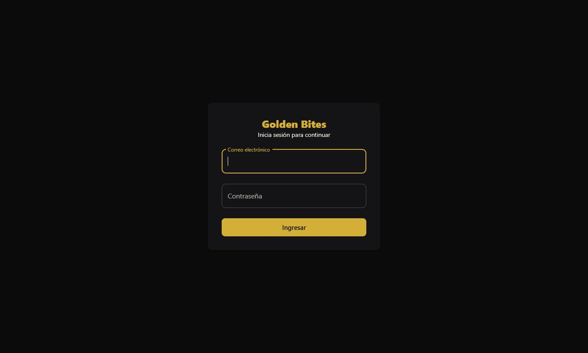
La pantalla de inicio de sesión.
Cambiar la contraseña la primera vez
Cuando a una persona se le crea su acceso, o se le restablece la contraseña, recibe una contraseña temporal. Al entrar con ella el sistema muestra Cambia tu contraseña y no deja hacer nada más hasta cambiarla:
Escribe la Contraseña actual (la temporal), la Nueva contraseña y repítela en Confirmar nueva contraseña.
Toca Guardar y continuar. El sistema cierra la sesión: vuelve a entrar con la contraseña nueva.
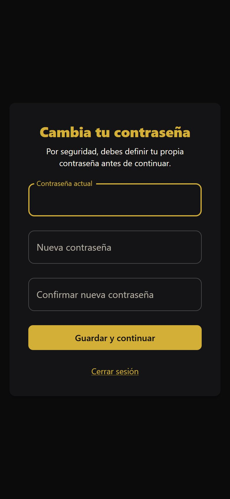
"Cambia tu contraseña", obligatoria con una contraseña temporal.
Si tu rol puede administrar todas las sedes, después de entrar ves "¿En qué sede vas a trabajar?": eliges una sede o Todas las sedes. Mientras no elijas, el sistema no muestra datos. Los demás entran directamente a su sede. (Ver capítulo 3.)
El menú lateral
Arriba: el logo y el nombre del negocio, con una etiqueta de la sede en la que estás (PRINCIPAL si el negocio tiene una sola).
Las secciones agrupadas en Operación diaria, Catálogo e inventario, Gestión del negocio y Control operativo, y al final Configuración.
Abajo, la flecha Colapsar menú lo reduce a íconos (al pasar el cursor se ve el nombre); Expandir menú lo vuelve a abrir.
Debajo del nombre del negocio aparece Cambiar de sede, para pasar a otra sede o a "Todas las sedes" en cualquier momento.
La barra superior
Buscador (Buscar pedidos, productos, clientes…): desde 2 letras muestra los productos y pedidos que ya cargaste en esta sesión; toca uno para ir a su sección.
Punto verde: indica que hay conexión con el servidor.
Notificaciones (campana): los avisos de la operación. Marcar todas como leídas las limpia. Sin avisos dice "Estás al día con la operación".
Tu nombre y rol: abre tu menú con Modo claro/Modo oscuro, Mi Perfil, Configuración y Cerrar sesión.
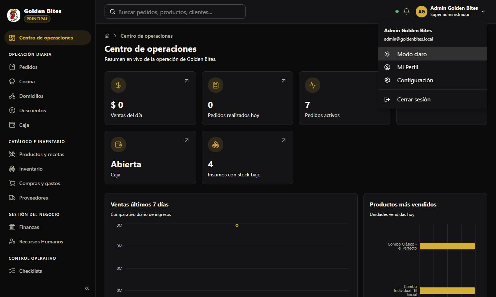
El menú de usuario, arriba a la derecha.
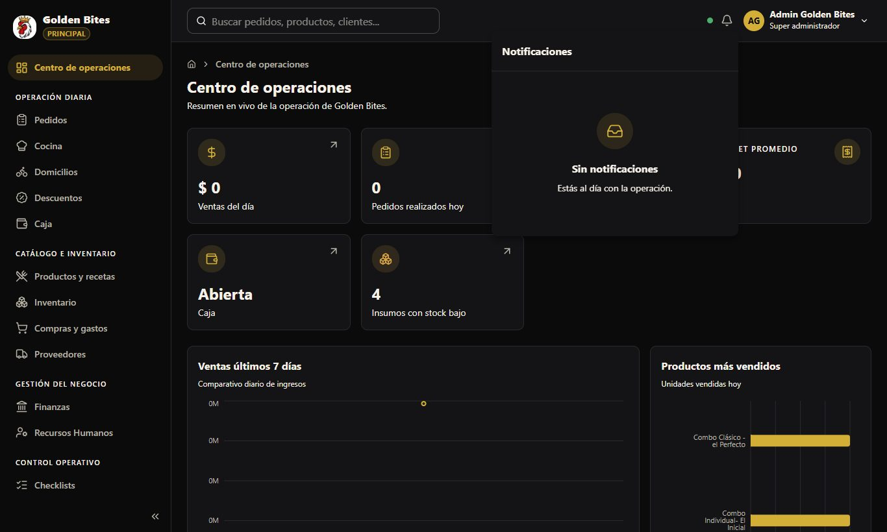
Las notificaciones.
Avisos que suenan en cualquier pantalla
Hay dos avisos que aparecen y suenan aunque no estés en su sección, porque nadie mira esas pantallas todo el tiempo:
Llamadas de mesa: un cliente tocó Llamar al personal en su mesa (en la pantalla de Pedidos).
Llamadas de domicilio: un cliente o un domiciliario tocó Llamar al restaurante (en todas las pantallas del POS).
Suenan al llegar y se repiten cada 20 segundos hasta que alguien toca Atendida/Atendido.
Capítulo 3
Una sede o varias sedes
Casi todo funciona igual con una o con varias sedes. Este capítulo explica las reglas generales; en el resto del manual, los recuadros azules "Varias sedes" indican lo que cambia en cada pantalla.
Si tu negocio tiene una sola sede
No tienes que pensar en sedes: todo lo que registras es de tu sede y el sistema la usa sola. Puedes saltarte los recuadros azules.
Si tu negocio tiene varias sedes
Cada sede funciona como un negocio aparte que comparte la marca, el personal y la configuración general con las demás.
Es de cada sede
Es de todo el negocio
Sus pedidos y su numeración.
Su caja: aperturas, movimientos y cierres.
Su catálogo de productos, con precios y recetas.
Sus insumos y existencias.
Sus mesas y gallos NFC.
Su cocina, sus domicilios y su ubicación en el mapa.
Sus mermas, checklists y normas de personal.
Su reserva de efectivo (Fondos).
Nombre, logo, NIT e impuestos.
Roles y permisos.
Personal (cada empleado tiene una sede principal).
Descuentos (promociones y cupones).
Categorías de productos y grupos de opciones.
Nombre y plantilla de "Arma tu combo".
Proveedores y tipos de gasto.
Tarifa de domicilios y cuenta bancaria.
Quién ve qué
Usuarios asignados a una sede (cajeros, meseros, cocina…): solo ven y trabajan en su sede. Si intentan abrir datos de otra, el sistema dice "No tienes acceso a esa sede".
Usuarios con el permiso "Administrar todas las sedes" (normalmente el dueño): eligen la sede al entrar, cambian cuando quieran y ven el Comparativo de sedes.
Un usuario sin sede asignada en un negocio con varias sedes no puede crear pedidos, operar la caja ni registrar mermas o checklists: un administrador debe asignarle una sede.
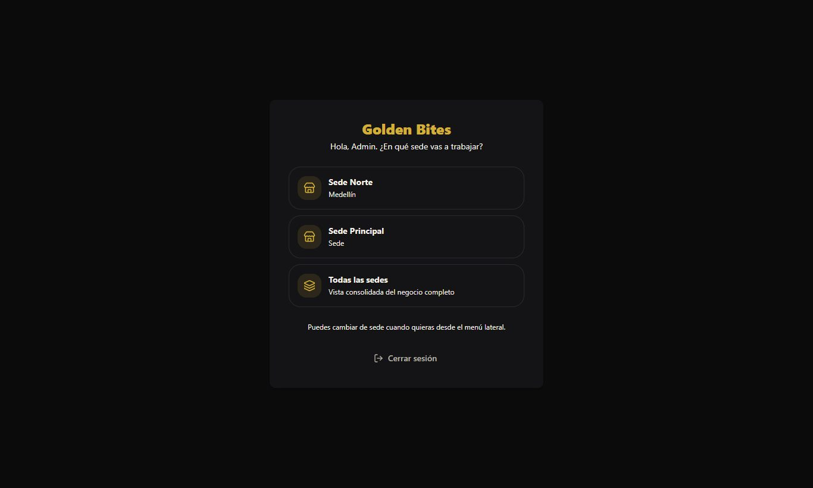
Al entrar, quien administra todas las sedes elige dónde trabajar.
El modo "Todas las sedes": para revisar y gestionar
Muestra la información de todas las sedes a la vez: lo vendido hoy por cada una, productos e insumos de todas (cada uno con su sede), compras, gastos, finanzas y el comparativo. No es para atender al público: el menú esconde Pedidos, Cocina, Domicilios, Caja, Checklists y Mermas, y no se pueden ajustar existencias ni crear productos o insumos (cada uno se crea en su sede). Una franja arriba de cada pantalla lo recuerda, con el botón Elegir una sede.
Regla práctica: para mirar y comparar, "Todas las sedes"; para trabajar, elige la sede.
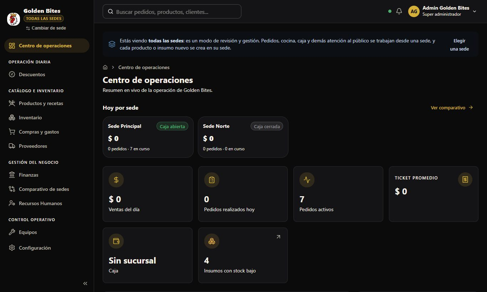
"Todas las sedes": la franja de aviso, el menú reducido y "Hoy por sede".
Quién crea las sedes
Las sedes las agrega, renombra o desactiva el equipo de Golden Bites, según lo contratado. Dentro del POS configuras lo de cada sede: número de mesas, gallos NFC y ubicación para domicilios.
Capítulo 4
Roles y permisos
Cada usuario tiene un rol y cada rol tiene permisos. El sistema trae roles listos y puedes crear los tuyos en Recursos Humanos → Roles y permisos (capítulo 18). Un cambio de permisos llega a las personas la próxima vez que inician sesión.
Roles que trae el sistema
Rol
Qué puede hacer
Dueño
Todo, incluidas todas las sedes, la configuración y los roles.
Gerente
Casi todo lo del día a día y la gestión: pedidos, caja (sin rectificar), productos, inventario, compras, proveedores, personal, tareas, permisos de ausencia, checklists, equipos, finanzas, domicilios y descuentos. No administra roles ni todas las sedes.
Cajero
Pedidos (crear, cobrar, editar), factura electrónica, domicilios, aplicar descuentos, caja (abrir, cerrar, retirar), ver cocina y productos, checklists.
Cocina
Ver pedidos y la cocina, y avanzar la preparación. Checklists.
Inventario
Insumos y existencias, compras, proveedores, equipos y checklists.
Empleado
Consultar el centro de operaciones, pedidos y productos; su perfil y checklists.
Ver · Crear domicilios, asignar domiciliario y cambiar su estado · Llevar domicilios (domiciliario) · Configurar la tarifa y la ubicación de las sedes.
Descuentos
Crear y administrar promociones y cupones · Aplicar descuentos al cobrar.
Cocina
Ver la pantalla de cocina · Actualizar el estado de preparación.
Inventario
Ver · Ajustar existencias · Transferir · Crear, actualizar y desactivar insumos · Conteos físicos.
Ver · Crear · Aprobar · Recibir mercancía · Cancelar órdenes de compra.
Proveedores
Ver · Crear, actualizar y desactivar.
Administración
Administrar usuarios · Administrar roles y permisos · Configuración del negocio · Administrar sedes · Administrar todas las sedes (cambiar de sede y comparativo) · Configuración general.
Personal
Ver personal · Administrar personal y turnos · Ver mi rol y normas · Configurar normas · Administrar tareas · Aprobar o rechazar permisos de ausencia.
Ver gastos y reportes · Registrar y actualizar gastos.
Capítulo 5 · Operación diaria
Centro de operaciones
La pantalla de inicio: un resumen en vivo de cómo va el día.
Qué muestra /
Ventas del día, Pedidos realizados hoy, Pedidos activos y Ticket promedio. Las tarjetas con flecha llevan a su sección.
Caja:Abierta o Cerrada; si está cerrada, un aviso arriba lo dice.
Insumos con stock bajo: cuántos están por debajo de su mínimo.
Ventas últimos 7 días, Ventas por hora (hoy, de 8 a. m. a 9 p. m.) y Productos más vendidos hoy.
Pedidos en cocina, con Ver cocina.
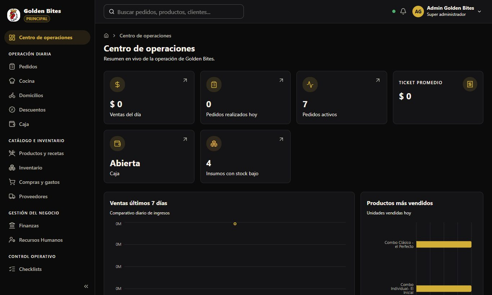
El Centro de operaciones de una sede.
Muestra la sede en la que estás. En Todas las sedes aparece Hoy por sede: lo vendido, los pedidos y los que están en curso en cada sede, y si tiene la caja abierta, con Ver comparativo.
Capítulo 6 · Operación diaria
Pedidos
Desde que se toma el pedido hasta que se entrega y se cobra.
Tipos de pedido
Tipo
Cuándo
En mesa
El cliente come en el local. Una mesa con un pedido activo queda ocupada.
Para recoger
El cliente se lo lleva.
Domicilio
Lleva dirección (obligatoria), instrucciones y costo de domicilio.
Servicio en carro
El cliente pide desde su vehículo; se registra la placa (Car Service).
Estados de un pedido
Estado
Qué significa
Pendiente
Recién creado (desde el POS o enviado por un cliente desde su mesa). Todavía no va a cocina.
Confirmado
Aceptado y enviado a cocina. En este momento se descuentan los insumos de la receta.
En preparación
La cocina lo está haciendo.
Listo
Terminado, para entregar o despachar.
Entregado
Cerrado.
Cancelado
Anulado con un motivo. Si ya estaba confirmado, los insumos vuelven al inventario.
El pago va aparte: Sin pagar, Pago parcial, Pagado o Reembolsado. Un pedido puede entregarse antes o después de pagarse (menos en Car Service, que se cobra antes de ir a cocina). Los pedidos del mesero y de Car Service llegan a cocina ya confirmados.
La pantalla de pedidos /pedidos
Vista kanban (una columna por estado, con cuántos hay) o Vista tabla (Pedido, Cliente, Tipo, Estado, Pago, Total).
En cada tarjeta del kanban: número, mesa, cliente, tipo, pago, total, el ícono de impresora (Imprimir comanda) y la flecha Avanzar a "…".
Filtros: buscar por número o cliente, Estado, Tipo, y la fecha: Solo hoy, Fecha específica o Todos los días. Limpiar filtros los quita.
Imprimir y notificar comandas automáticamente: si lo activas, este equipo imprime solo la comanda de cocina de cada pedido nuevo. Es una preferencia de cada equipo.
Si quedan pedidos de días anteriores sin cerrar, una franja lo avisa con Ver pedidos atrasados.
Cada pedido muestra un cronómetro; los que pasan de 15 minutos se marcan como retrasados.
Botones: Abrir en modo tablet y Abrir Car Service (capítulo 8), Enviar menú y Nuevo pedido.
Llamadas de mesa: cuando un cliente toca Llamar al personal desde su mesa, aparece una franja con la mesa y cuánto lleva esperando, y suena. Toca Atendida.
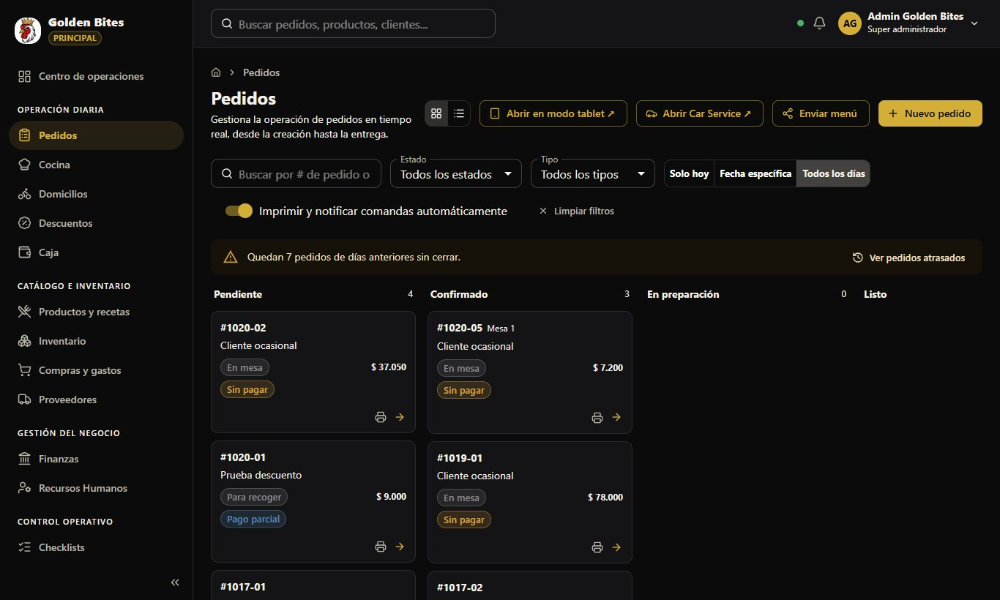
Pedidos en vista kanban.
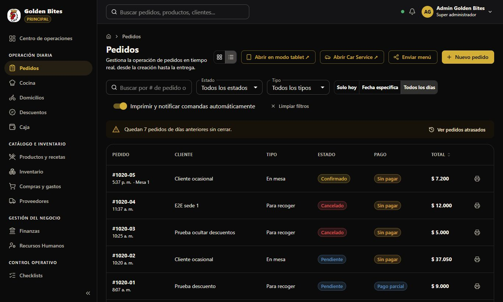
La misma lista en vista tabla.
Crear un pedido
Toca Nuevo pedido.
Opcional: Cliente registrado o Nombre del cliente.
Elige el Tipo de pedido y completa lo que pide: la mesa, la Placa del vehículo, o la Dirección de entrega, las Instrucciones de entrega y el Costo de domicilio.
Toca los productos para agregarlos (cada toque suma una unidad; ajusta cantidades en la lista). Si el producto tiene opciones (salsas, tamaño…), elígelas; cada unidad puede llevar opciones distintas. Los productos Agotado no se pueden elegir.
Opcional: un Descuento (COP) en pesos y Notas del pedido.
Toca Crear pedido. Queda Pendiente.
Mesa ocupada: si la mesa ya tiene un pedido activo, el sistema no deja abrir otro: abre el de esa mesa y usa Agregar productos.
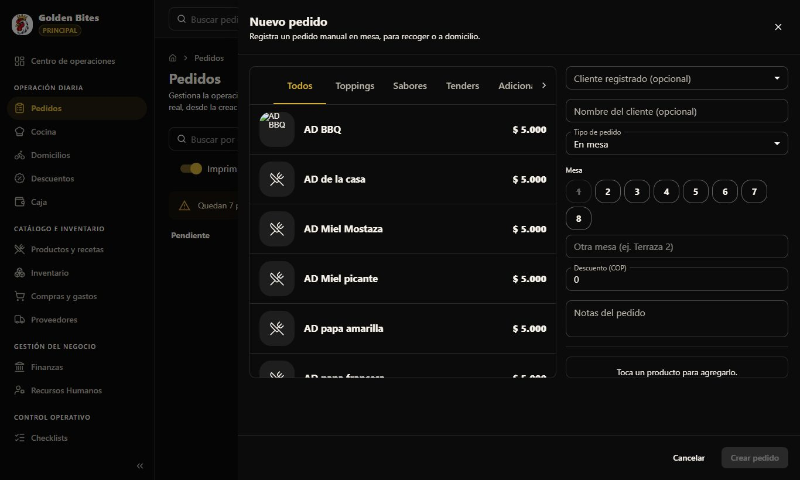
Nuevo pedido.
El detalle de un pedido
Toca un pedido para abrirlo. Arriba: número, tipo y estado. Luego el cliente (y mesa o dirección), los productos con sus opciones y notas, el subtotal, descuento, impuestos, domicilio y total.
Avanzar a "…" (abajo): lo pasa al siguiente estado.
Imprimir comanda (para cocina) e Imprimir factura (para el cliente). Ambas llevan el logo del negocio.
Editar productos: cambiar producto, cantidad o nota, o quitar productos, mientras el pedido siga activo (no entregado ni cancelado). Si ya estaba confirmado, el inventario se ajusta solo.
Agregar productos: suma productos a la cuenta sin tocar lo ya pedido (ideal en mesa).
Cancelar → Cancelar pedido: escribe el Motivo de la cancelación y confírmalo.
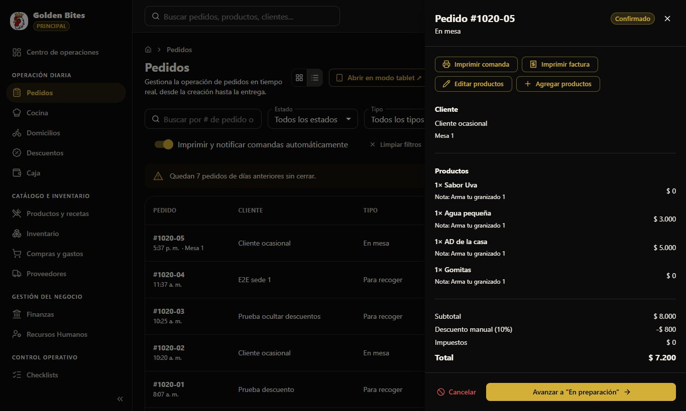
El detalle de un pedido.
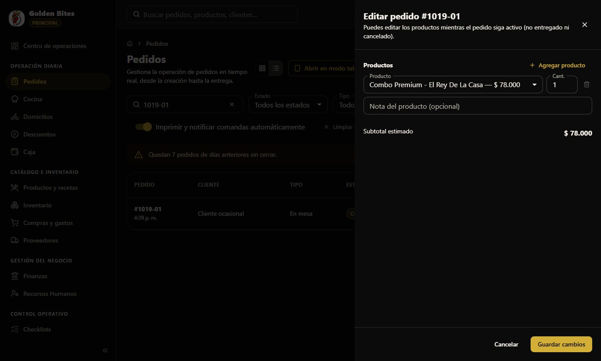
Editar productos de un pedido.
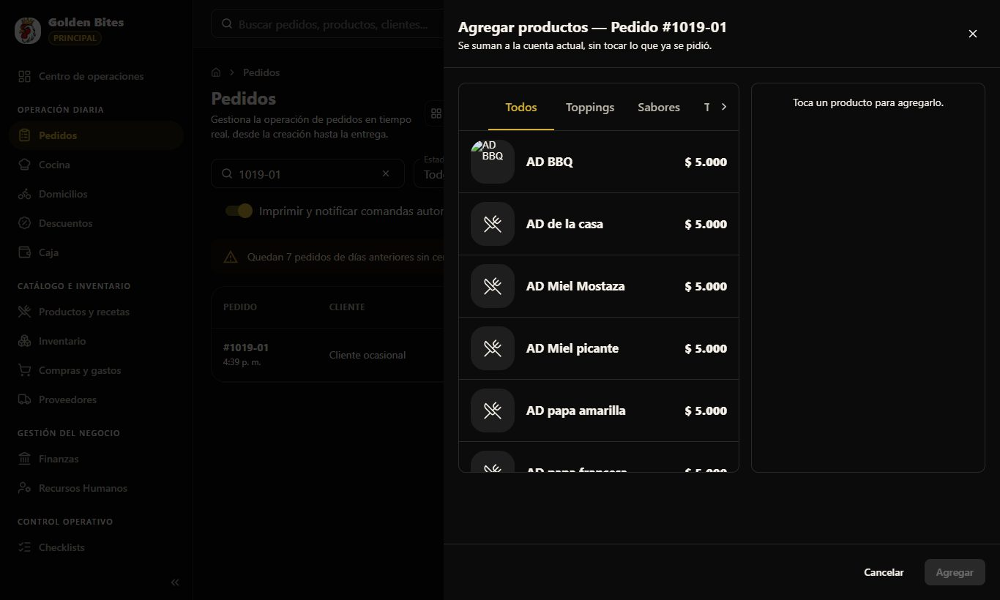
Agregar productos a una cuenta abierta.
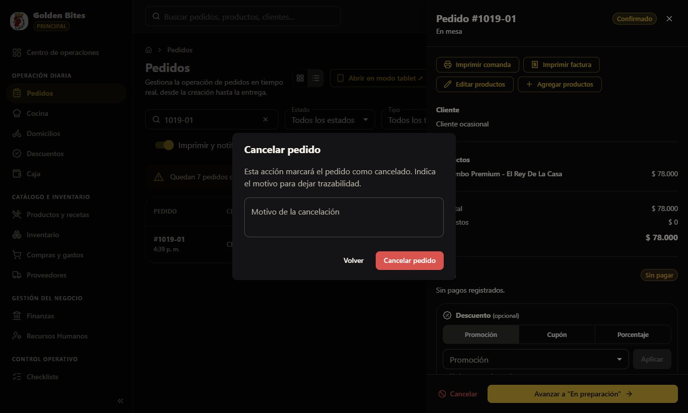
Cancelar un pedido pide el motivo.
Cobrar
En Pagos elige el Método: Efectivo, Tarjeta, Transferencia, Nequi, Daviplata u Otro.
Escribe el Monto (si lo dejas vacío se propone el saldo pendiente) y toca Registrar.
Puedes registrar varios pagos: una parte ahora (queda Pago parcial) y el resto después, o con métodos distintos.
La Calculadora de cambio: escribe con cuánto paga el cliente (Paga con) y te dice el cambio.
Cuando el pedido queda pagado completo, la factura se imprime sola.
Corregir el método de un pago ya registrado (por ejemplo, era Nequi y se marcó Efectivo): ábrelo en la lista de pagos, cámbialo y guarda ("Método de pago corregido").
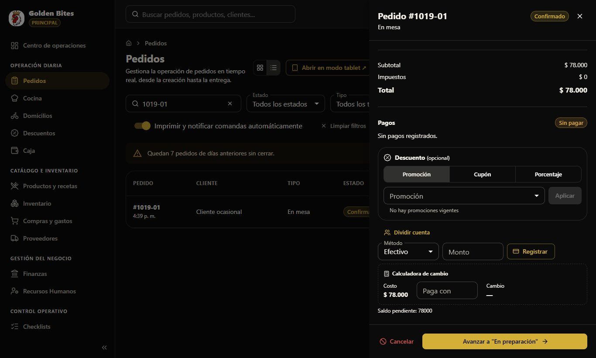
Pagos, dividir cuenta y calculadora de cambio.
Dividir la cuenta
Toca Dividir cuenta. Arriba ves el Saldo pendiente.
Partes iguales: escribe ¿Entre cuántas personas? (mínimo 2) y el sistema reparte el saldo exacto. Montos personalizados: escribe el monto de cada persona; Agregar persona suma filas.
Para cada persona, opcionalmente su nombre, y el Método de pago.
Cuando aparece "Los montos cuadran con el saldo pendiente", toca Confirmar división. Se registra un pago por persona; si uno falla, los anteriores quedan hechos y puedes reintentar.
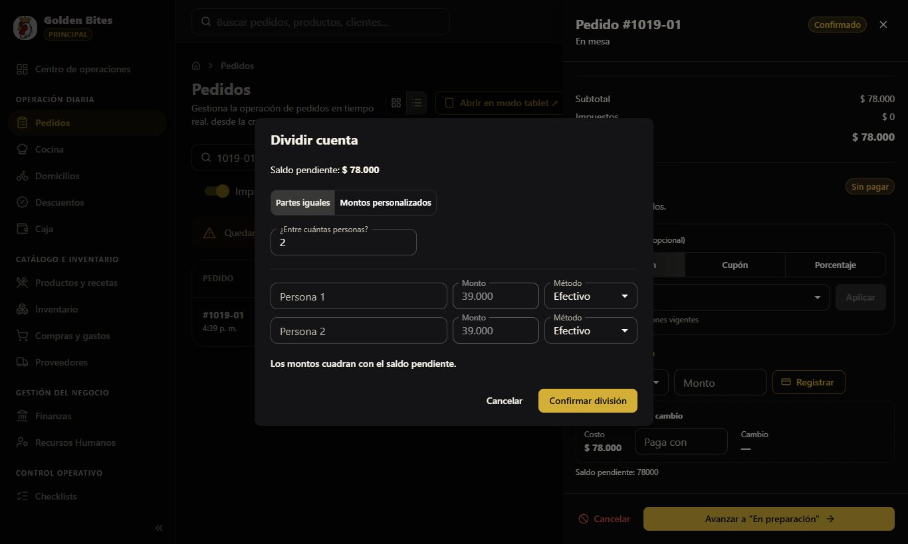
Dividir cuenta en partes iguales.
Descuento al cobrar
Si tu negocio tiene activada la sección (Configuración → Impuestos, pagos y canales de venta) y tu rol puede aplicar descuentos, el detalle muestra Descuento (opcional). Uno por pedido, y solo mientras no tenga pagos:
Promoción: eliges una de las vigentes (si no hay, dice "No hay promociones vigentes").
Cupón: escribes el Código del cupón que trae el cliente.
Porcentaje: un porcentaje manual (5 cobra el total menos el 5%).
Toca Aplicar; después puedes Cambiar o quitarlo. Se calcula sobre el subtotal, antes de impuestos y domicilio, y en los totales aparece con su nombre.
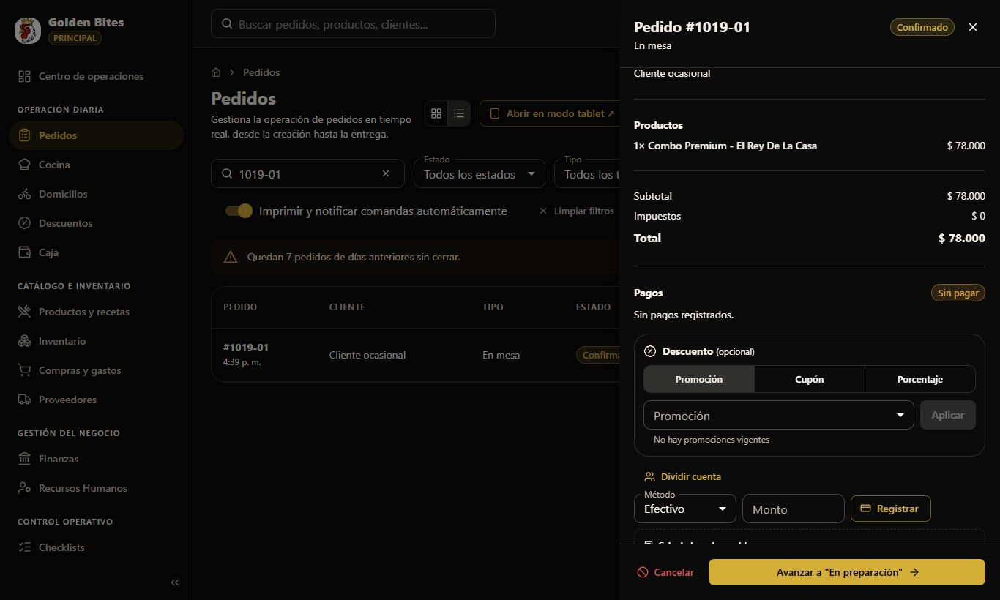
La sección Descuento del pedido.
Factura electrónica (DIAN)
Si tu negocio tiene facturación electrónica, en un pedido pagado aparece Factura electrónica:
Elige Consumidor final (lo normal en un restaurante) o Con datos del comprador.
Con datos: Persona o Empresa, el Documento (tipo y número; para NIT, sin dígito de verificación), Nombre completo o Razón social, el Correo (ahí recibe la factura), teléfono y dirección. Si el pedido tiene cliente, sus datos se llenan solos.
Toca Emitir factura electrónica ("Enviando a la DIAN…").
El pedido muestra el número de la factura, con PDF e Imprimir. Si falló, dice el motivo: corrige y vuelve a intentar.
Ambiente de pruebas: mientras tu conexión con Factus esté en pruebas, la factura se valida con la DIAN de pruebas y no tiene validez fiscal. El equipo de Golden Bites configura la conexión.
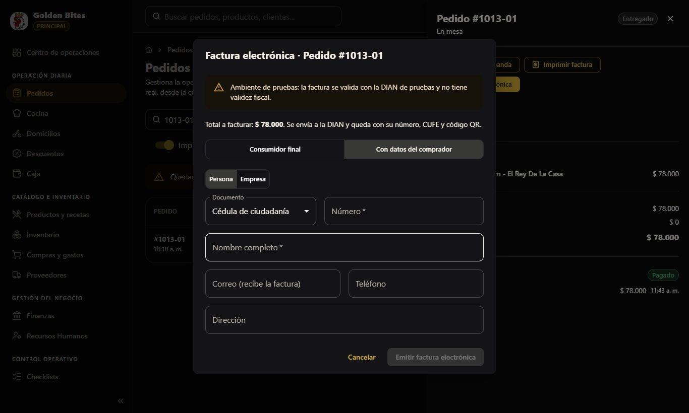
Emitir la factura electrónica de un pedido pagado.
Enviar menú
Enviar menú abre Compartir menú: el enlace público del menú (o directo a "Arma tu combo"), para Copiar enlace, Abrir, Compartir o Enviar por WhatsApp a un número (vacío: eliges el contacto en WhatsApp). Más detalle en el capítulo 13.
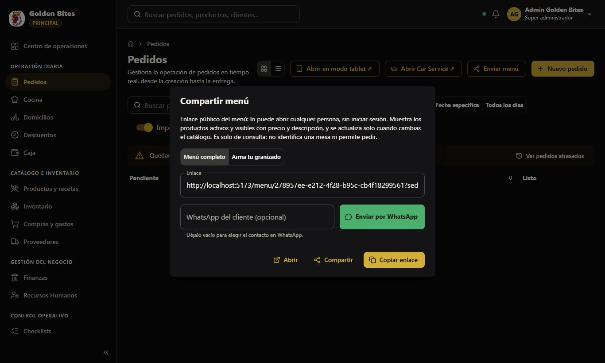
Enviar el menú a un cliente.
Pedidos atrasados /pedidos-atrasados
Pedidos de días anteriores que quedaron sin cerrar (ni entregados ni cancelados). Desde aquí se avanzan o se cancelan para dejar la operación al día.
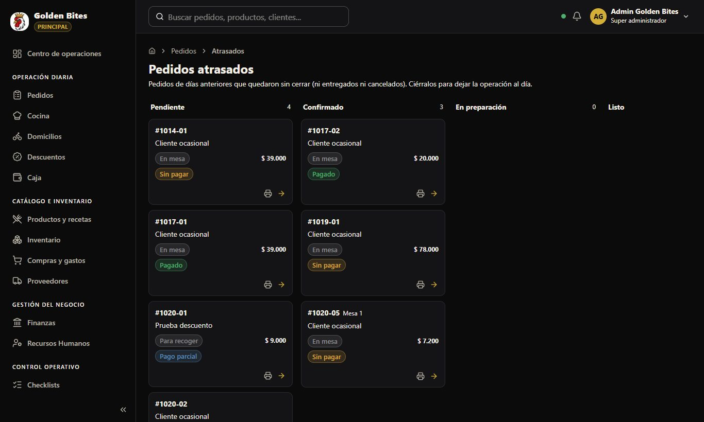
Pedidos atrasados.
Los pedidos se crean en la sede en la que estás, solo con productos de esa sede y a sus precios.
La numeración es por sede.
En Todas las sedes la sección Pedidos no aparece; lo vendido por cada sede se ve en el Centro de operaciones, Finanzas y el Comparativo.
Capítulo 7 · Operación diaria
Cocina
La pantalla donde la cocina ve lo que tiene que preparar.
Pantalla de cocina /cocina
Muestra los pedidos Confirmados y En preparación: productos, opciones, notas, mesa o tipo y el tiempo que llevan.
Iniciar preparación lo pasa a En preparación; Marcar como listo a Listo.
Arriba: cuántos hay activos y cuántos van retrasados (más de 15 minutos).
Orden: Más antiguos primero o Más recientes primero. Pantalla completa para la pantalla de la cocina.
Los combos que arma el cliente llegan con la nota "Arma tu combo 1", "2"… en cada producto, para saber cuáles van juntos.
Los pedidos nuevos aparecen solos. Abrir en modo tablet abre la versión para tablet.
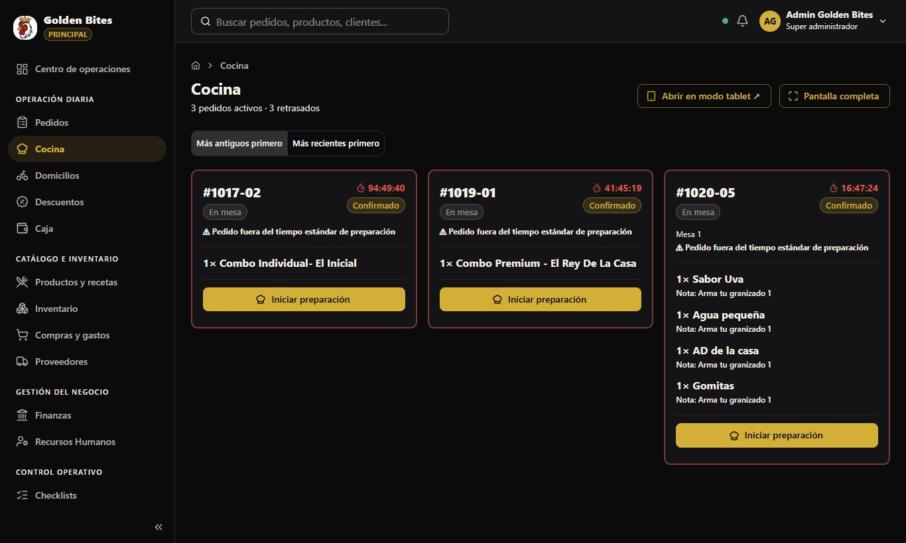
La pantalla de Cocina.
Cada sede tiene su cocina: solo se ven los pedidos de la sede en la que estás. En Todas las sedes la sección no aparece.
Capítulo 8 · Operación diaria
Modo tablet: Mesero, Cocina y Car Service
Pantallas a pantalla completa, con botones grandes, para usar de pie. Se abren desde Pedidos o Cocina en una pestaña nueva y se quedan abiertas en la tablet. Si la pantalla completa no arranca sola, se activa con el primer toque.
Mesero /tablet/mesero
El inicio tiene tres botones grandes y, arriba, Mis pedidos (con cuántos tiene activos) y Salir.
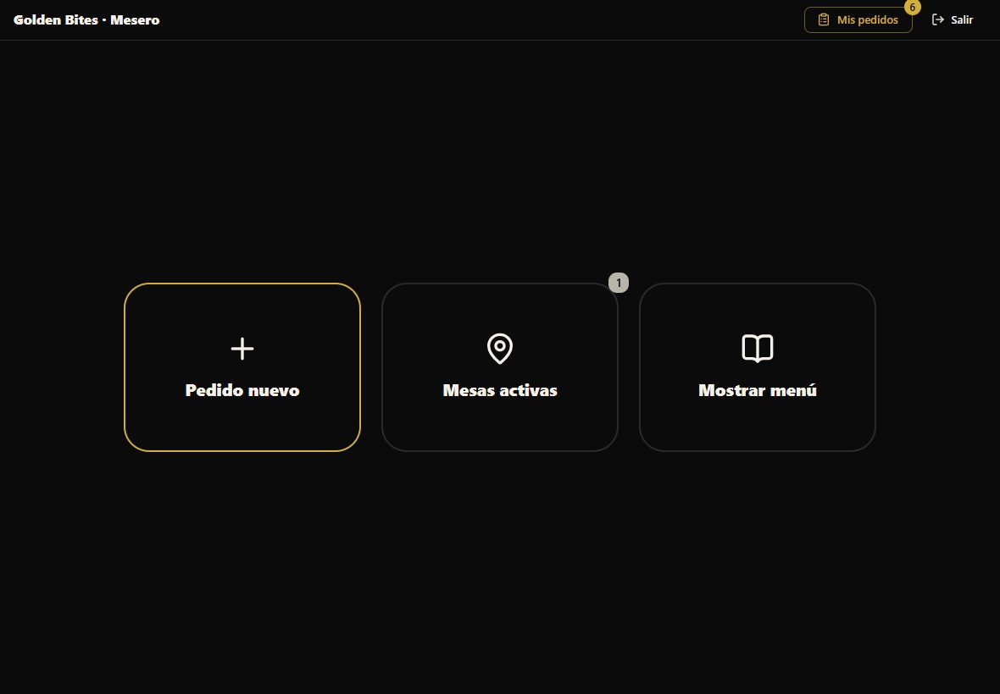
Modo tablet del mesero.
Pedido nuevo
Arriba elige En mesa o Para recoger. En mesa, toca el número (las ocupadas se marcan: "Mesa ocupada — ya tiene un pedido activo") o escribe otra (ej. "Terraza 2").
Toca los productos (por categoría o Todos); los que tienen opciones las piden. Los agotados no se pueden tocar.
Opcional: Nombre del cliente y Comentario del pedido (ej. "Sin cebolla").
Enviar a cocina: el pedido llega a cocina ya confirmado.
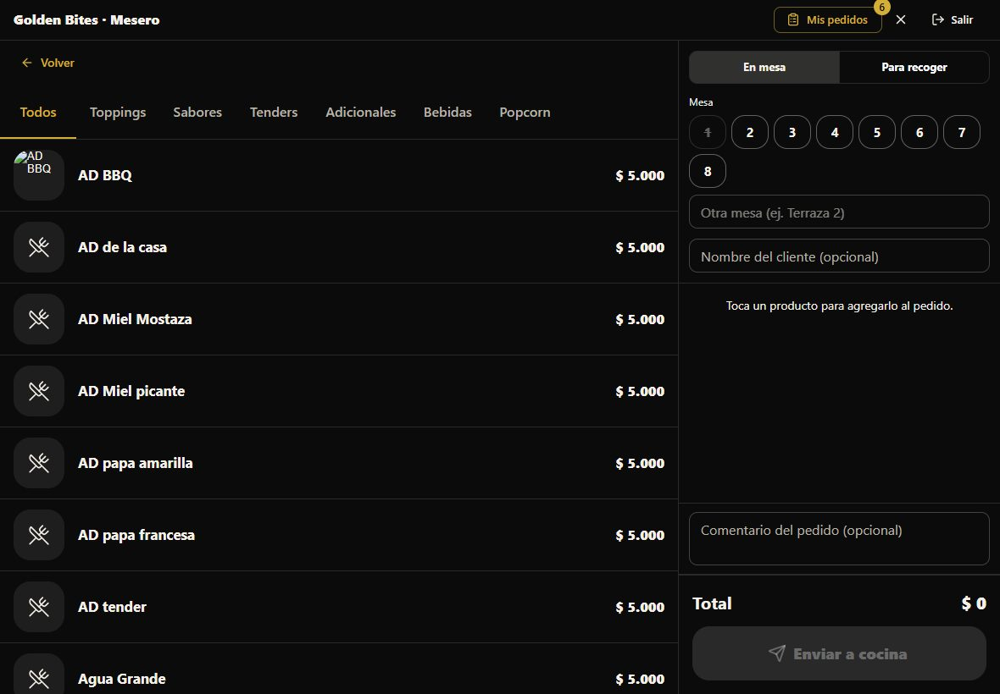
Pedido nuevo: productos, mesa y total.
Mesas activas y Mis pedidos
Mesas activas: cada mesa con pedido en curso, con su estado y total; tócala para abrirla.
Mis pedidos: los que tomaste, con su estado y cuánto llevan. En cada uno: Confirmar pedido (si estaba pendiente), Agregar productos y Marcar como entregado.
Cuando la cocina termina un pedido tuyo aparece el aviso "Pedido listo" arriba, hasta que lo cierres.
Mostrar menú enseña la carta como la ve el cliente; Enviar menú se la manda.
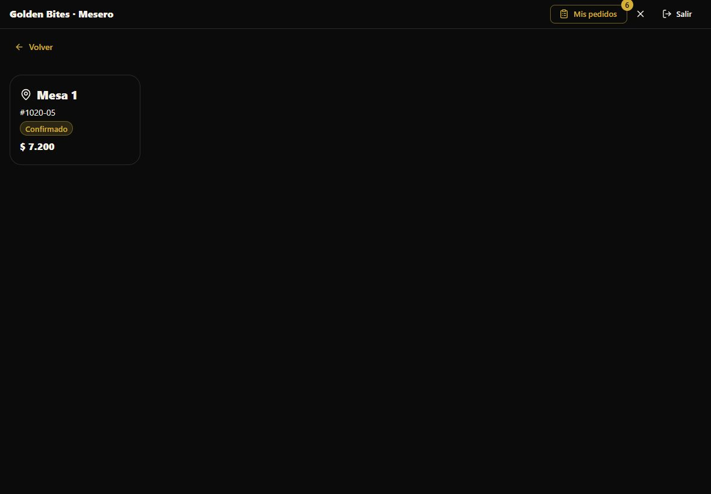
Mesas activas.
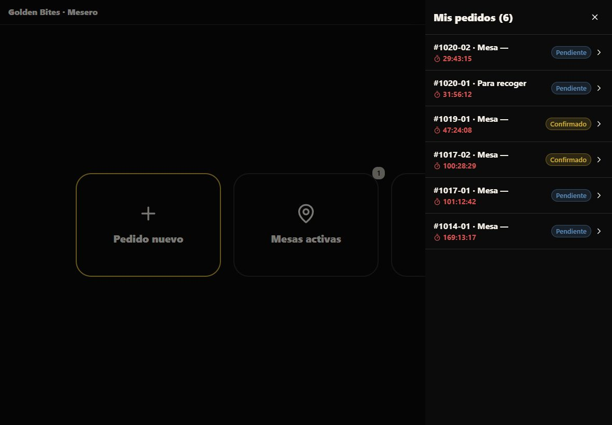
Mis pedidos.
Cocina /tablet/cocina
Las comandas como tarjetas. Desliza una tarjeta hacia el lado para avanzarla (de confirmada a en preparación, y a lista). Los pedidos nuevos aparecen solos.
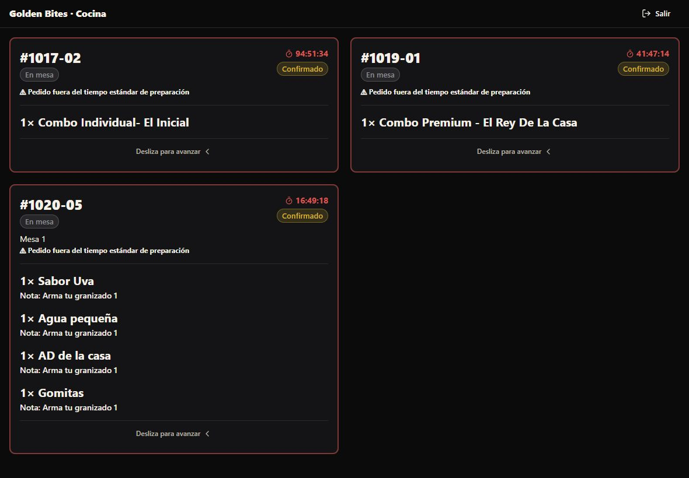
Modo tablet de cocina.
Car Service /tablet/servicio-carro
Escribe la Placa o descripción del vehículo (ej. "ABC-123 / Camioneta gris") y, si quieres, el nombre del cliente.
Toca los productos (Todo el menú o por categoría).
Cobrar y enviar a cocina: elige Cobrar en efectivo o Cobrar con tarjeta. El pedido se cobra y pasa a cocina.
Entrega al cliente el número de pedido. Cuando está listo aparece "¡Pedido #… listo! Vehículo …".
El cobro con tarjeta de Car Service es una pasarela simulada: no procesa pagos reales. Registra el pago en el sistema, pero el cobro real con datáfono se hace aparte.
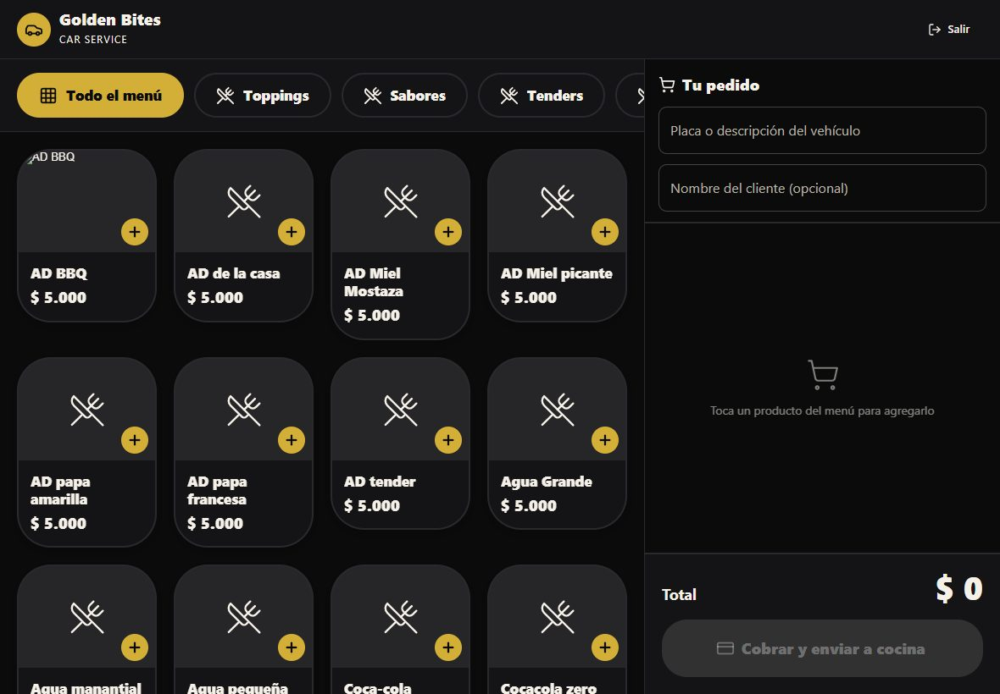
Car Service.
La tablet trabaja en la sede del usuario con el que se inició sesión: en cada sede usa un usuario de esa sede.
Capítulo 9 · Operación diaria
Domicilios y app del domiciliario
Ruta y valor por distancia desde cada sede, quién lleva cada domicilio, seguimiento en vivo, chat con el cliente y la app del domiciliario.
La pantalla /domicilios tiene cuatro pestañas: Nuevo domicilio, Domicilios, Seguimiento y Tarifa y sedes (cada una según los permisos del usuario).
Tarifa y sedes (hacerlo primero)
Tarifa
El valor de cada domicilio sale de la distancia por carretera. Mientras no se guarde la tarifa no se pueden crear domicilios.
Precio por cada cierta distancia (Por cada y Unidad: km o m). Ej.: 1.000 pesos por cada 1 km.
Cómo contar la distancia:Exacta (3,4 km = 3,4) o Por unidad iniciada (3,4 km = 4).
Base (opcional, se suma siempre), Valor mínimo (opcional) y Redondear a (0 = sin redondeo).
Debajo, un ejemplo con varias distancias muestra cuánto se cobraría. Guardar tarifa.
Ubicación de las sedes
Es el punto A de los domicilios de cada sede (Ubicada / Sin ubicar). Búscala por dirección, usa Estoy en la sede: usar mi ubicación, o arrastra el pin; luego Guardar ubicación.
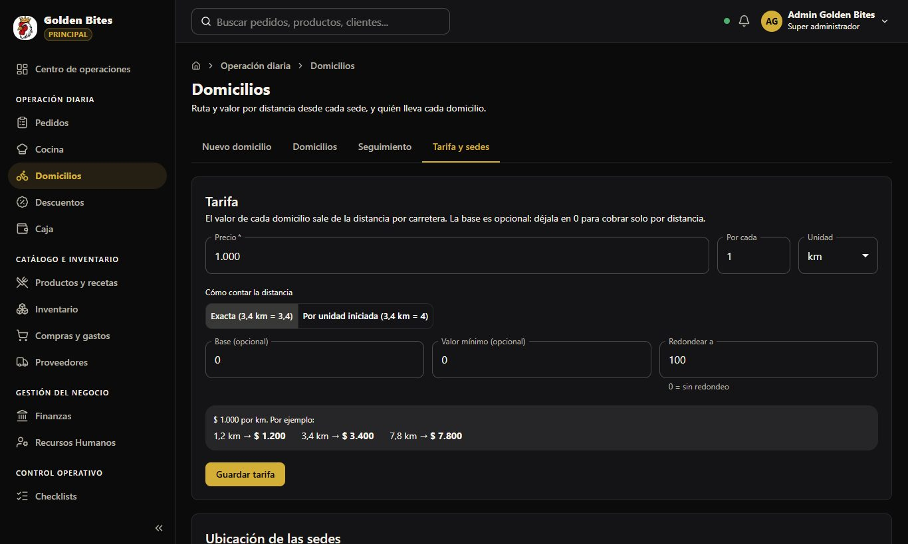
Tarifa y sedes.
Nuevo domicilio
Punto A · sede: la sede de salida, o el botón de ubicación para elegir la más cercana a ti. Si la sede no está ubicada, arrastra el pin A hasta ella.
Punto B · entrega: escribe la Dirección de entrega (con sugerencias), toca el mapa, o usa Pegar ubicación de WhatsApp: en WhatsApp mantén presionada la ubicación que mandó el cliente → Copiar (o en Google Maps Compartir → Copiar enlace), y pégala con Pegar lo que copié → Ubicar en el mapa. También sirven enlaces de Waze o coordenadas. (La ubicación en tiempo real de WhatsApp no se puede copiar: pide la ubicación actual.)
Completa Apartamento, torre, indicaciones, Cliente, Teléfono y Notas.
Opcional: el Domiciliario (se puede asignar después) y Vincular a un pedido (busca por número, cliente o dirección; pedidos recientes sin domicilio).
El sistema muestra la Distancia, el Tiempo aprox. y el Valor del domicilio, con la ruta en el mapa. Ambos pines se pueden arrastrar.
Crear domicilio. Se abre Enlace de seguimiento: envíaselo al cliente por WhatsApp, Compartir o cópialo.
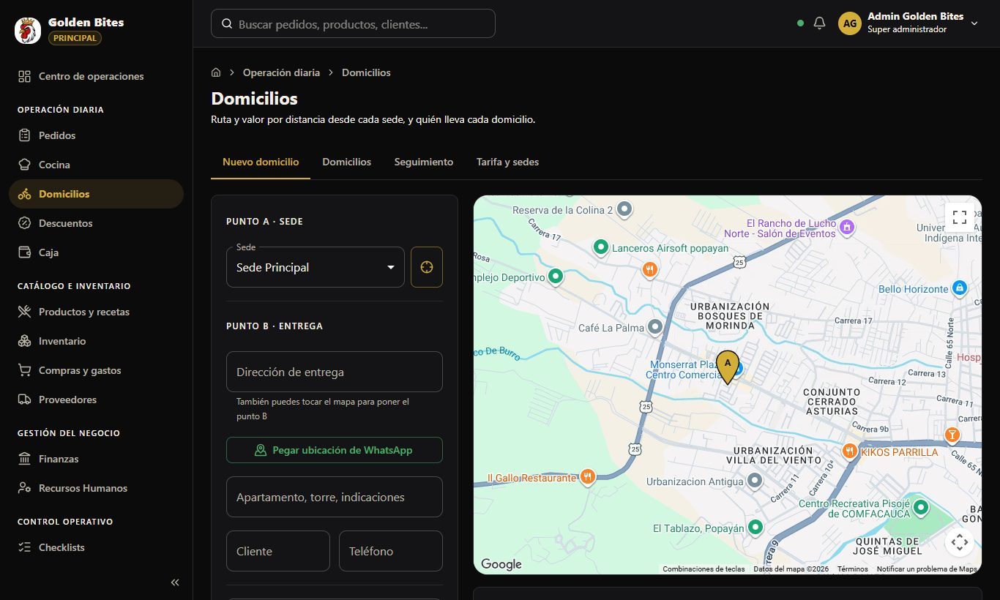
Nuevo domicilio: punto A, punto B y el mapa.
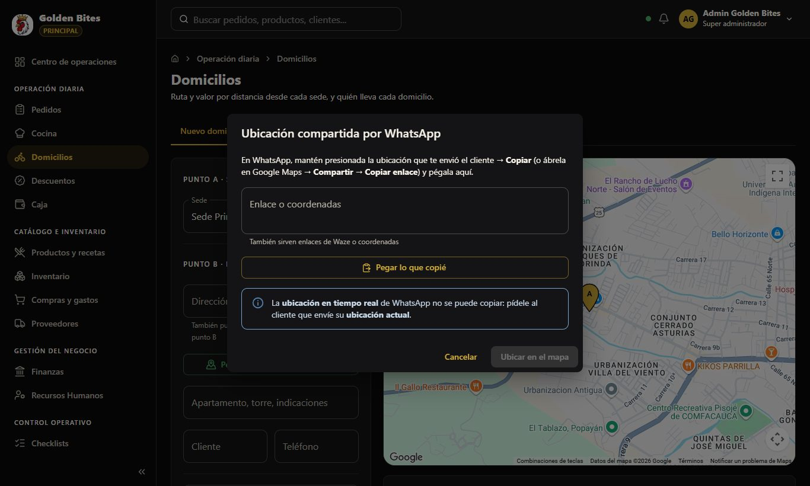
Pegar la ubicación que mandó el cliente por WhatsApp.
La lista del día (pestaña Domicilios)
Cada domicilio con su código (6 letras y números), pedido, hora, destino, distancia, valor, domiciliario y estado (Sin asignar, Asignado, En camino, Entregado, Cancelado).
Busca por código, pedido, cliente, teléfono o dirección; filtra por Día y Estado.
En cada fila: asignar o cambiar el domiciliario; pasar a En camino o Entregado; llamar al domiciliario (su teléfono suena hasta que lo vea); Vincular a un pedido (o cambiarlo o desvincularlo: el cliente verá el detalle y costos de ese pedido en su seguimiento); el enlace de seguimiento; el chat; Ver ruta en Google Maps; y Cancelar domicilio.
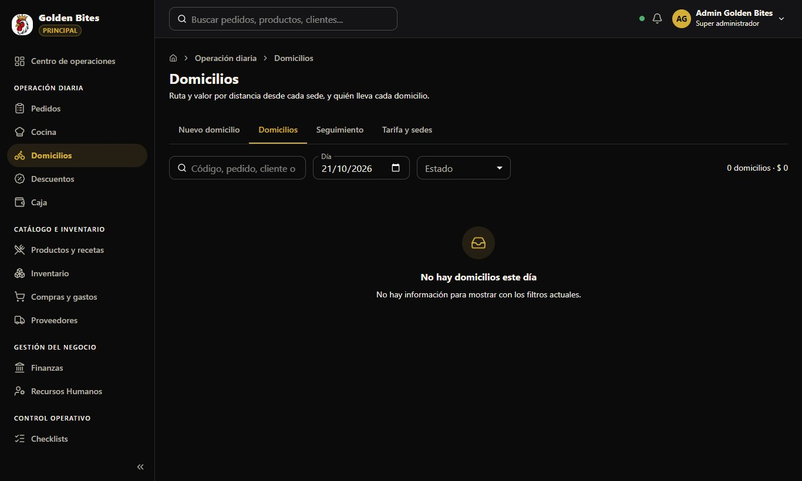
La lista de domicilios del día.
Seguimiento, chat y llamadas
Seguimiento: el mapa con dónde está cada domiciliario (según su teléfono, se actualiza cada 10 segundos), qué lleva y el recorrido hecho. Los domiciliarios comparten su ubicación mientras tienen la app abierta con domicilios asignados.
Chat del domicilio: el restaurante, el cliente y el domiciliario se escriben (Enter envía; Mayúsculas+Enter, nueva línea). Respuestas rápidas: "Ya revisamos tu domicilio", "Tu pedido va en camino", "Te llamamos en un momento", "Disculpa la demora". Cuando el domicilio termina, el chat se cierra.
Llamadas al restaurante: si el cliente o el domiciliario tocan Llamar al restaurante (con un motivo opcional), suena un aviso en todas las pantallas del POS con el código, el cliente y la dirección, cada 20 segundos hasta que alguien toca Atendido.
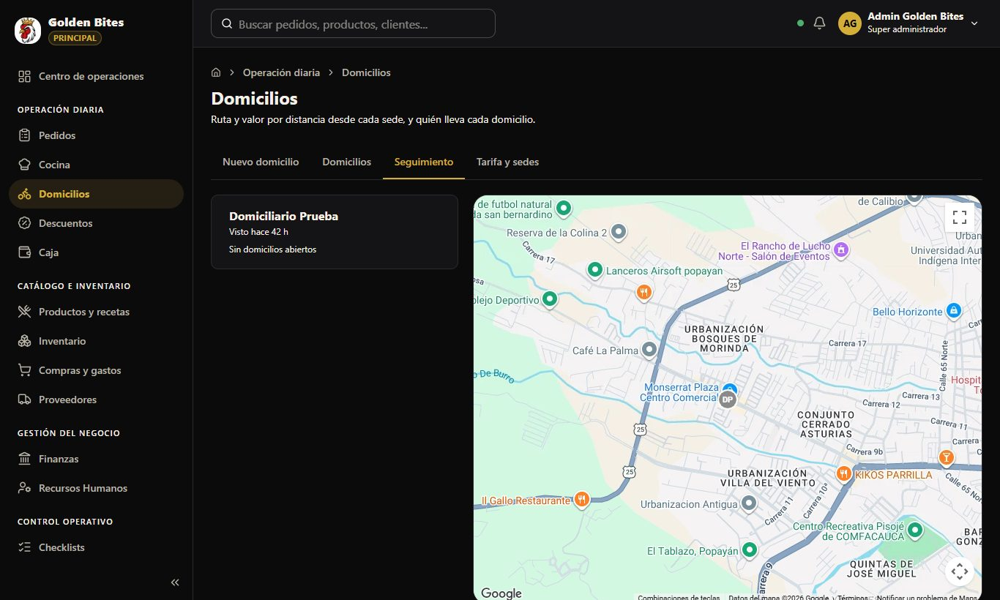
Seguimiento en vivo de los domiciliarios.
La app del domiciliario /domiciliario
El domiciliario entra con su usuario desde el celular. El inicio lo saluda y tiene cuatro opciones:
Mi ruta actual: el domicilio en camino con el mapa, el cliente y la ruta (Recalcular la ruta desde donde estás). Botones: WhatsApp y llamar al cliente, Google Maps, el chat (con mensajes sin leer) con respuestas rápidas ("Voy en camino", "Llego en 5 minutos", "Ya llegué, estoy afuera", "No encuentro la dirección, ¿me ayudas?"…), Llamar al restaurante (con motivos como "El cliente no contesta", "Problema con el pago", "Problema con la moto") y Marcar como entregado ("¿Entregaste el domicilio?" → "Sí, entregado").
Pendientes: lo asignado y por salir; Iniciar ruta lo pone en camino.
Mis domicilios: los entregados y cancelados, hoy y esta semana.
Balance: valor de los domicilios entregados, cuántos, el recorrido, cancelados y promedio por domicilio. (Es lo que se cobró; lo que le corresponde al domiciliario lo define el negocio.)
Cuando le asignan un domicilio nuevo, el celular suena, vibra y muestra "Nuevo domicilio asignado". Si el restaurante o el cliente lo llaman, aparece una pantalla de llamada que suena hasta que la vea.
Para que suene con el teléfono bloqueado: toca Activar en el aviso de notificaciones. En iPhone, primero Compartir → «Agregar a inicio», abre la app desde ese ícono y activa las notificaciones. Si están bloqueadas, se activan en los ajustes del navegador. La ubicación se comparte solo mientras la app está abierta: mantenla en pantalla mientras reparte.
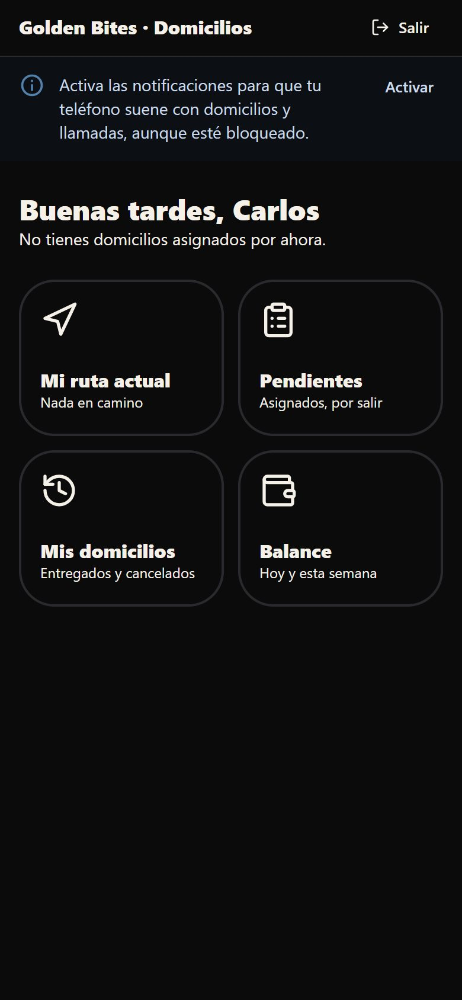
El inicio de la app del domiciliario.
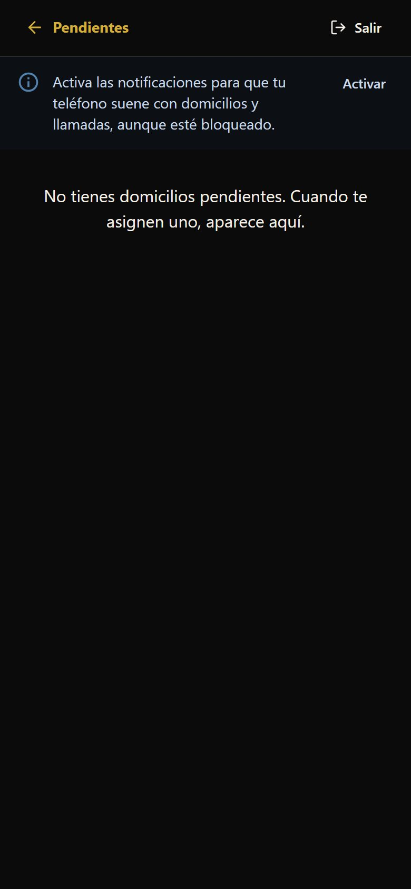
Pendientes.
Lo que ve el cliente /seguimiento
Con el enlace (o entrando a /seguimiento y escribiendo el código de 6 letras y números) el cliente ve:
El estado: Recibido → Domiciliario asignado → En camino → Entregado; suena y avisa en cada cambio.
Al domiciliario en el mapa (en cuanto su teléfono comparte la ubicación).
Detalle de tu domicilio: quién lo lleva, la dirección, y si hay pedido vinculado, sus productos, subtotal, descuento, impuestos, domicilio y total, con el estado del pago.
El chat con respuestas rápidas ("¿Cuánto falta?", "Ya estoy afuera", "¿Dónde está mi pedido?", "Mi pedido llegó incompleto", "Quiero cambiar la dirección"…), Llamar a mi domiciliario y Llamar al restaurante.
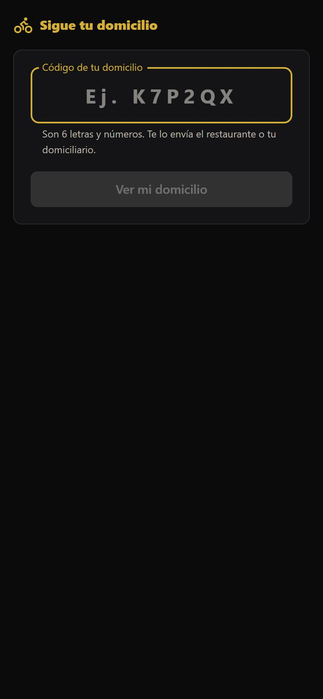
La página de seguimiento pide el código.
Cada sede es su propio punto de salida y tiene su lista de domicilios. La tarifa es la misma para todo el negocio. En Todas las sedes la sección no aparece.
Capítulo 10 · Operación diaria
Descuentos
Promociones para eventos y cupones con código, para aplicar al cobrar.
Promociones y cupones /descuentos
Promoción
Para eventos y temporadas: se elige de la lista al cobrar mientras esté vigente.
Cupón
Tiene un código (ej. VERANO10: de 3 a 30 letras, números, guiones o guiones bajos) que el cliente presenta al pagar.
Nueva promoción o Nuevo cupón.
Nombre (ej. "Día de la madre"), Código (cupón), Porcentaje de descuento (sobre el subtotal, antes de impuestos y domicilio) y Descripción.
Opcional: Desde y Hasta (debe ser después de "Desde"), y Límite de usos (vacío: sin límite).
Déjalo Activo y toca Crear.
Cada uno muestra su estado (Vigente, Programado, Vencido, Desactivado), sus usos (Sin usos) y sus fechas (Sin fecha límite). Editar o Eliminar.
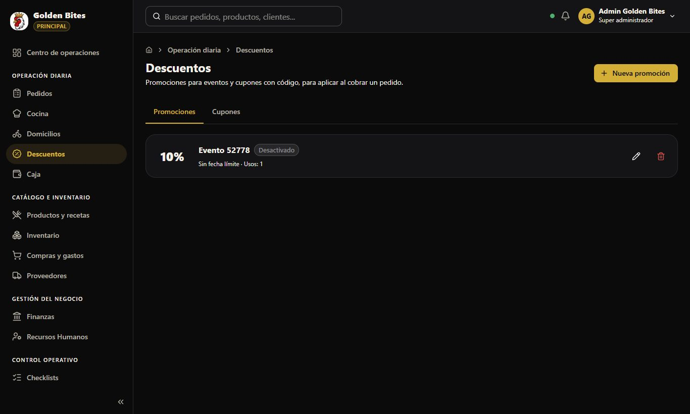
Descuentos.
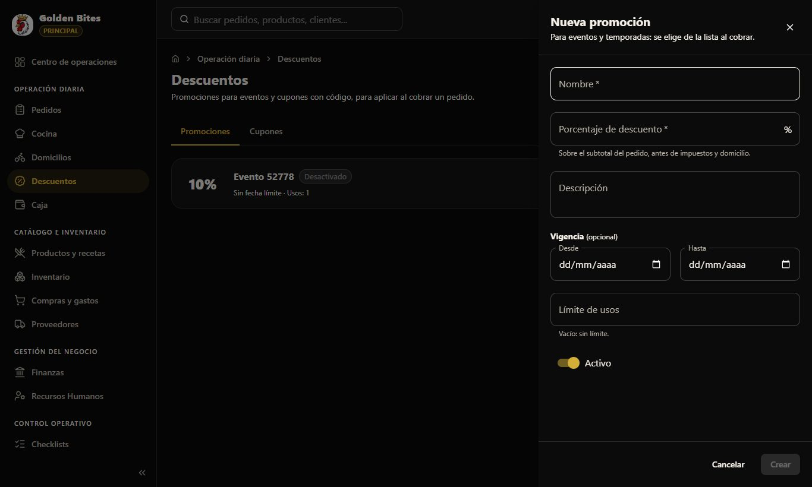
Nueva promoción.
Si no ves la sección Descuento al cobrar: actívala en Configuración → Impuestos, pagos y canales de venta.
Los descuentos son del negocio: sirven en todas las sedes.
Capítulo 11 · Operación diaria
Caja
Apertura, movimientos y cuadre de caja por turno.
Abrir la caja /caja
Con la caja cerrada la pantalla dice "La caja está cerrada". Toca Abrir caja, escribe la Base inicial (el efectivo con que arranca el turno) y el Responsable, y confirma.
Durante el turno
Tarjetas: Base inicial, Ventas en efectivo (y en cada otro método usado), Ventas del turno (cuántos pagos) y Movimientos manuales.
Registrar movimiento: Ingreso (entra dinero que no es venta), Gasto (se paga algo con la caja) o Retiro (se saca efectivo), con monto y descripción.
Movimientos del turno actual: fecha, tipo, descripción y monto (apertura, ventas, ingresos, gastos, retiros, reembolsos, reversiones de gasto y anulaciones de ingreso).
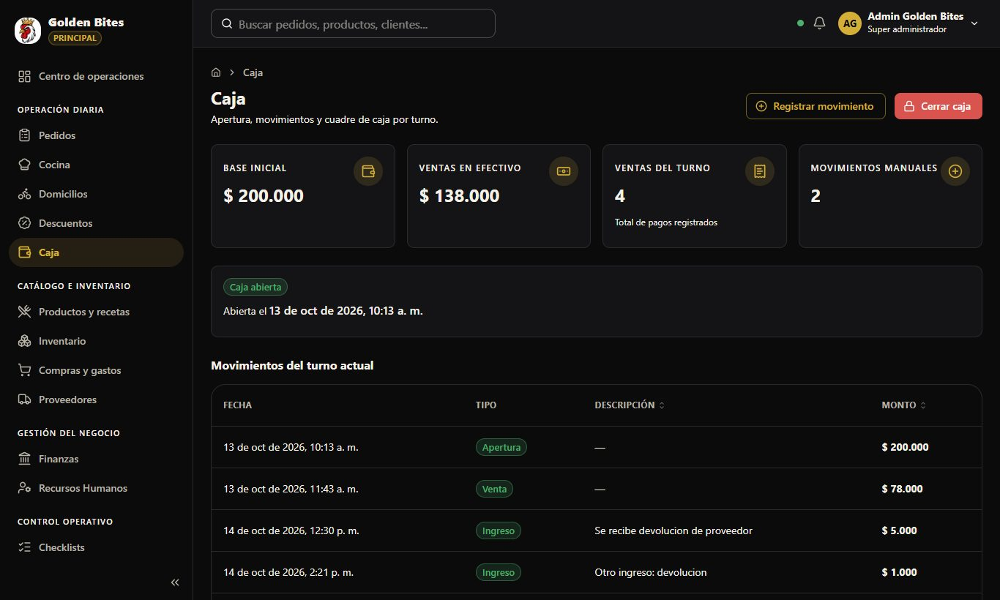
Caja abierta.
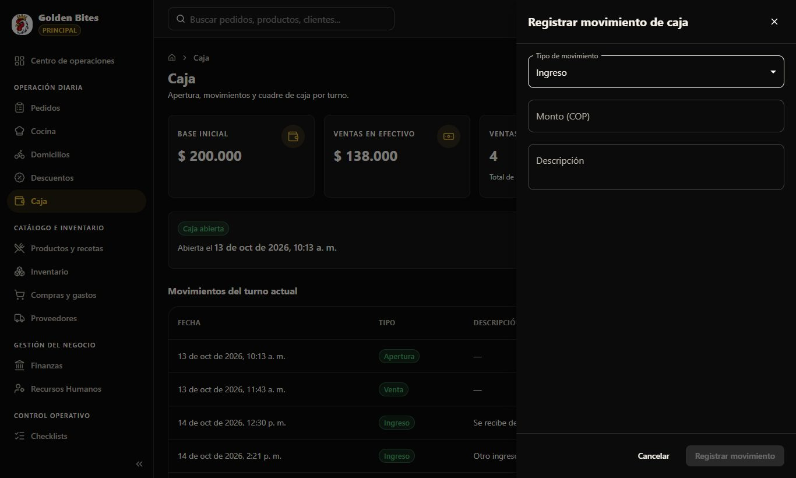
Registrar un movimiento de caja.
Cerrar la caja
Cerrar caja.
Cuenta el efectivo físico y escríbelo en Efectivo contado.
Opcional: Transferencias recibidas, si vas a verificarlas (vacío si no).
Observaciones del cierre y Cerrar caja. El sistema calcula la diferencia y la muestra al cerrar.
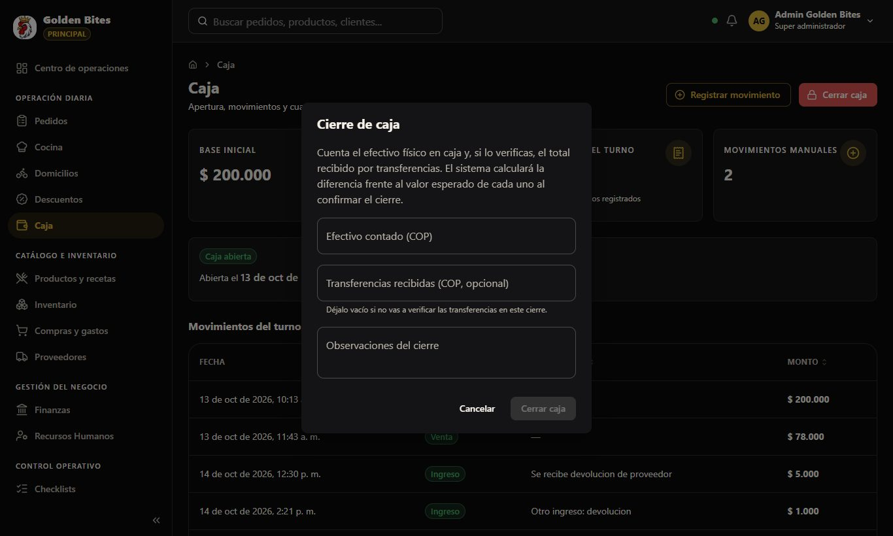
Cierre de caja.
El Historial de sesiones guarda cada cierre: apertura, cierre, base inicial, efectivo contado, diferencia de efectivo, transferencias verificadas y su diferencia.
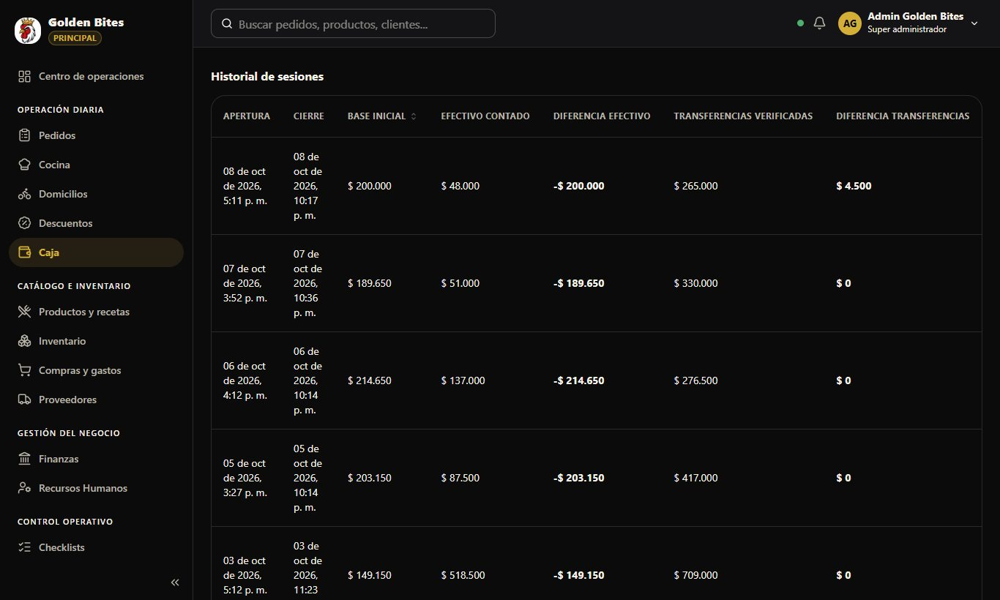
Historial de sesiones de caja.
Rectificar una caja cerrada
En el historial, Rectificar sobre esa sesión.
Escribe el Motivo de la corrección (mínimo 5 caracteres) y la Clave maestra de administrador; Reabrir para corregir.
La sesión aparece En corrección, junto a la de hoy: Agregar movimiento con lo que faltó y Cerrar corrección.
La caja de hoy no se toca y puedes seguir operando mientras corriges. La clave maestra la entrega el equipo de Golden Bites al dueño; además se necesita el permiso de rectificar.
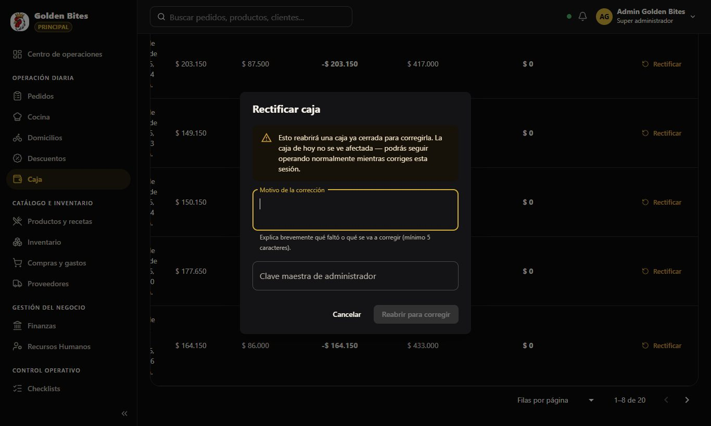
Rectificar una caja cerrada.
Cada sede tiene su caja: se abre y se cierra en la sede en la que estás. En Todas las sedes la sección no aparece; el Comparativo dice si cada sede tiene la caja abierta.
Capítulo 12 · Catálogo e inventario
Productos, categorías y opciones
Todo lo del catálogo y del menú que ve el cliente está en Productos y recetas.
El centro de productos /productos
Tarjetas con su estado actual, cada una abre su pantalla:
Catálogo:Productos (cuántos y cuántos activos) y Categorías (cuántas activas).
Menú del cliente:Organizar menú, Arma tu combo (o el nombre que le pongas; dice cuántos productos tiene) y Compartir menú (capítulo 13).
Opciones para elegir: una tarjeta por grupo ("Salsas", "Tamaños"…) con cuántas opciones activas tiene, Ordenar y Nuevo grupo de opciones.
Arriba: Compartir menú y Nuevo producto.
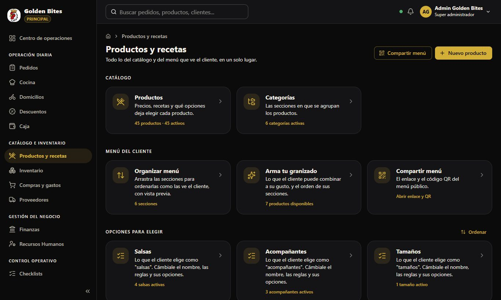
Productos y recetas.
El catálogo /productos/catalogo
Cada producto en una tarjeta con su foto, precio, margen y etiquetas: Activo/Inactivo, Solo combo o Menú + combo, y Agotado. Buscador y filtros por Categoría y Estado (Activos, Inactivos).
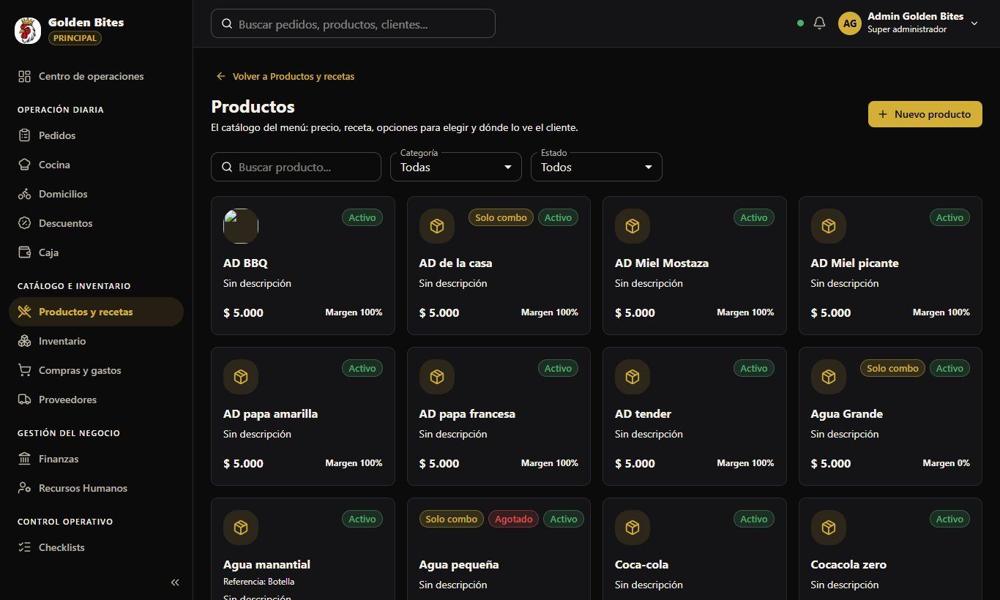
El catálogo de productos.
Crear o editar un producto
Nuevo producto (o Editar producto en su detalle).
Foto:Subir foto (JPG, PNG o WEBP; se reduce sola antes de subirla), Cambiar foto o Quitar foto. Se ve en el menú del cliente y en el punto de venta.
Nombre del producto, Descripción, Categoría (o "Sin categoría"), Referencia y Precio de venta.
Controla inventario: si está encendido, al venderlo se descuentan insumos. Para un producto que sale de un solo insumo (una botella de agua), aquí mismo eliges el Artículo de inventario y la Cantidad por venta. Si su receta tiene varios insumos, se edita desde "Vínculo con inventario".
Disponible para el cliente en: Solo menú (aparece en el menú de la mesa), Menú y arma tu combo (en el menú y también para armar combos) o Solo arma tu combo (no aparece en el menú: solo para armar combos).
Opciones para elegir: marca qué grupos ofrece este producto y el Máx. de cada uno (cuántas puede elegir el cliente).
Crear producto / Guardar cambios.
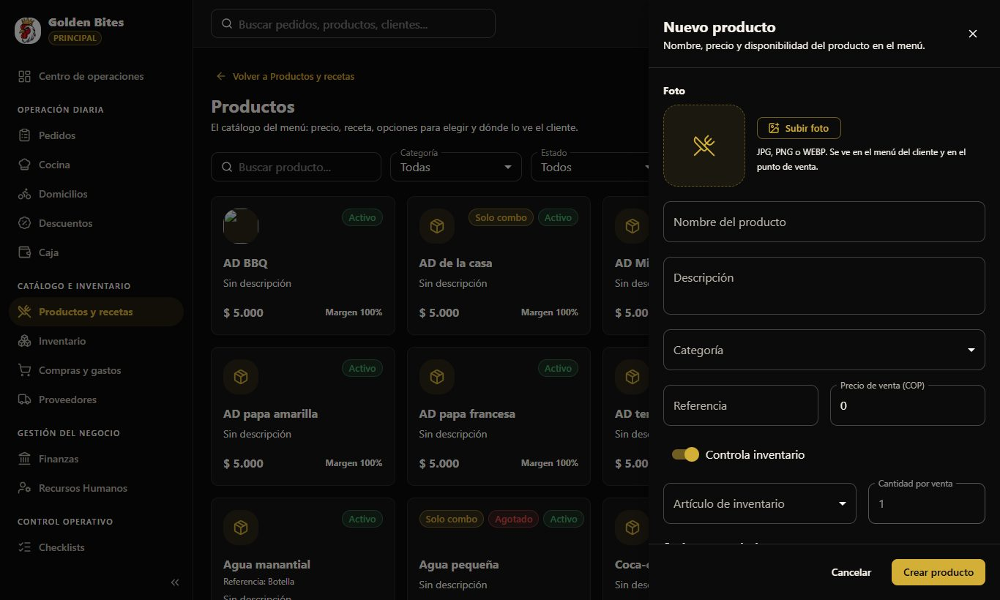
Nuevo producto.
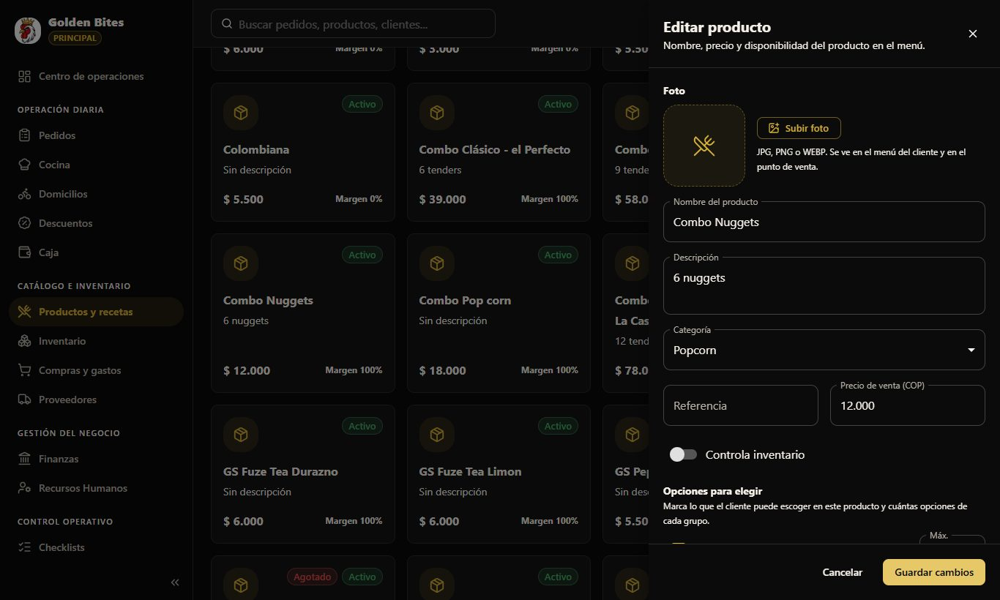
La parte de abajo: controla inventario y opciones para elegir.
El detalle de un producto
Precio de venta, costo actual y margen; etiquetas de estado (Activo, Visible en menú público, Controla inventario) y su vínculo con el inventario. Abajo:
Ocultar del menú / Mostrar en menú: oculto se sigue vendiendo en el POS, pero el cliente no lo ve.
Desactivar / Activar: inactivo no se vende en ningún lado.
Eliminar (pide confirmación; no se puede deshacer) y Editar producto.
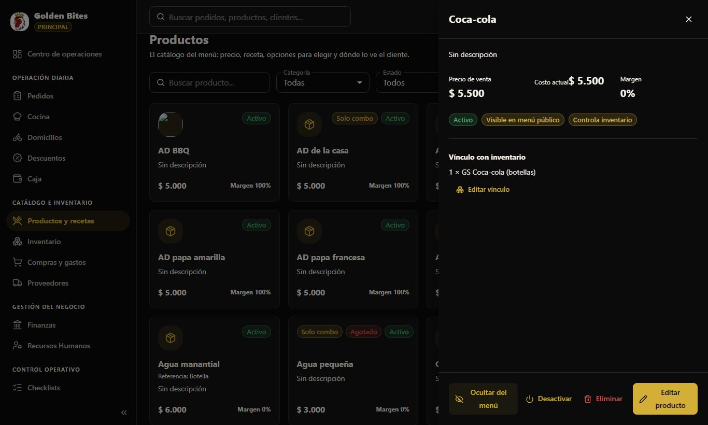
El detalle de un producto.
Recetas: el vínculo con el inventario
Vincular inventario o Editar vínculo abre Vínculo con inventario: qué insumos, y cuánto de cada uno, se descuentan cada vez que se vende una unidad. Ej.: "Hamburguesa" = 1 pan + 150 g de carne + 20 g de queso.
Agregar artículo por cada insumo: elige el Artículo de inventario y la Cantidad.
Abajo se ve el costo estimado por unidad vendida.
Guardar vínculo. Quitar vínculo lo borra.
Los insumos se descuentan cuando el pedido pasa a Confirmado, y vuelven si se cancela después.
Si "Controla inventario" está apagado, el vínculo se guarda pero no descuenta nada (la ventana lo advierte).
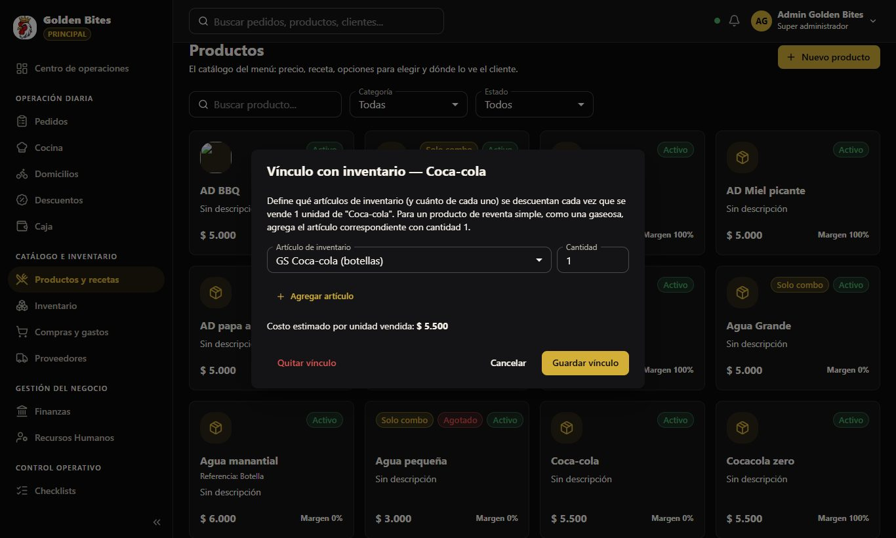
Vínculo con inventario (receta).
Agotado automático: si a un producto que controla inventario le falta algún insumo de su receta, el sistema lo marca Agotado: desaparece del menú del cliente y no se puede pedir en el POS ni en las tablets. Vuelve solo cuando entra stock del insumo.
Categorías /productos/categorias
Las secciones del menú (Hamburguesas, Bebidas…). Nueva categoría: nombre, descripción y orden de aparición. Cada una se puede editar y Desactivar/Activar (una categoría desactivada deja de mostrarse).
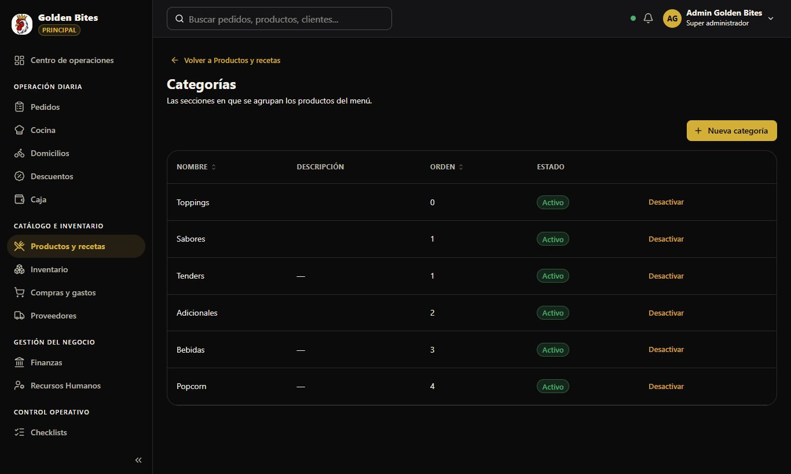
Categorías.
Opciones para elegir
Lo que el cliente escoge en algunos productos: "Salsas", "Tamaño", "Término", "Mezcladores", "Acompañantes".
Crear un grupo
Nuevo grupo de opciones: Nombre (plural) (ej. Mezcladores) y Nombre (singular) (ej. Mezclador), y si es Obligatorio (hay que elegir al menos una).
Crear grupo: se abre su pantalla para agregarle las opciones.
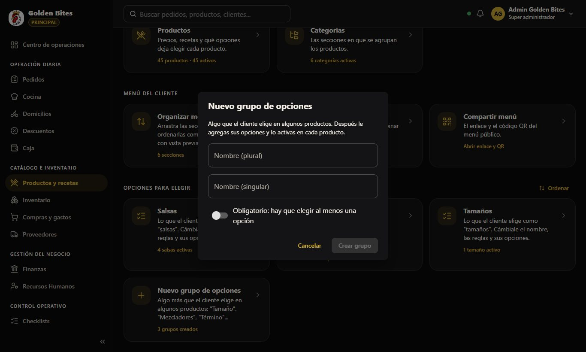
Nuevo grupo de opciones.
La pantalla de un grupo
Cómo funciona este grupo: activo (los productos pueden ofrecerlo) o apagado (no aparece en ningún lado), los nombres, si es obligatorio y el Máximo sugerido (con el que arranca un producto al ofrecerlo). Guardar o Descartar.
Las opciones: agregar (nombre, descripción, orden), editar, activar/desactivar o eliminar. Los pedidos ya hechos conservan la opción.
Desactivar grupo (deja de usarse por un tiempo) o Eliminar grupo (para siempre, con sus opciones; avisa cuántos productos dejan de ofrecerlo).
Así aparece en el punto de venta, la cocina, los tickets y el menú del cliente. Un grupo apagado no se muestra, pero los productos que lo tenían lo conservan por si se vuelve a activar.
La pantalla de un grupo de opciones.
Ordenar grupos
Ordenar (en el centro de productos): con las flechas defines en qué orden se le preguntan al cliente y se imprimen en la comanda (primero "Tamaño", luego "Salsas"…). Guardar orden.
Ordenar los grupos de opciones.
Cada sede tiene su catálogo: sus productos, precios y recetas. Lo que creas, lo creas en la sede en la que estás. En el detalle del producto se ve Sede: … y si está Agotado allí.
Llevar a otra sede: crea una copia independiente en la sede que elijas, con su precio, opciones, foto y receta; allá se puede cambiar sin afectar el original. Los insumos de la receta que esa sede no tenga se crean sin stock, por eso la copia sale Agotado hasta que entre stock allá.
En Todas las sedes ves los productos de todas, cada uno con su sede; no se crean productos desde ahí.
Las categorías, los grupos de opciones y "Arma tu combo" son de todo el negocio.
Varias sedes: "Llevar a otra sede" desde el detalle del producto.Varias sedes: el catálogo en "Todas las sedes".
Capítulo 13 · Catálogo e inventario
El menú del cliente: organizar, "Arma tu combo" y plantilla HTML
Cómo se ordena lo que ve el cliente, cómo funciona "Arma tu combo", cómo ponerle un diseño propio con una plantilla HTML, y cómo compartir el menú.
Organizar menú /productos/organizar
Hay dos listas, cada una con su propio orden. Arriba eliges cuál: Menú o Arma tu combo (con el nombre que le hayas puesto).
Cada sección (categoría) aparece con su número de orden y cuántos productos tiene en esa lista.
Arrastra una sección por el ícono de la izquierda y suéltala donde va, o usa las flechas Subir/Bajar.
Cada cambio se guarda solo al soltar ("Guardando…" → "Orden guardado").
A la derecha, Así lo verá el cliente: un celular con el menú en el orden que estás armando, que se mueve en vivo mientras arrastras.
Solo se ordenan las secciones que tienen productos para esa lista; las demás se nombran debajo ("No aparecen en esta lista porque no tienen productos para ella"). Los productos sin categoría salen al final, en "Otros".
El menú no muestra los productos "Solo arma tu combo", y "Arma tu combo" no muestra los "Solo menú".
Organizar menú: la lista Menú con su vista previa.
"Arma tu combo"
Una página aparte del menú (su propia dirección, terminada en /combo) donde el cliente junta los productos que quiera de los que el negocio ofrece para armar, cada uno con sus opciones, y los agrega al pedido como un solo combo. Reglas:
Se arma con al menos 2 productos (un solo producto se pide desde el menú normal).
Cuesta la suma de lo elegido.
Un producto sin opciones se agrega con un toque, sin preguntar; uno con opciones las pide.
En una mesa con autoservicio el combo se pide; desde el enlace público o una mesa sin autoservicio es solo de consulta.
En la cocina, los productos de un combo llegan marcados "Arma tu combo 1", "2"…
Qué productos entran: los marcados Menú y arma tu combo o Solo arma tu combo en cada producto.
Al elegir Arma tu combo en Organizar menú aparecen, además del orden de sus secciones:
La lista "Arma tu combo": nombre, plantilla, secciones y vista previa en vivo.
1. El nombre: "Cómo lo ve el cliente"
Nombre (hasta 40 caracteres): por defecto "Arma tu combo"; puedes llamarlo como quieras (ej. "Arma tu granizado"). Ese nombre se usa en todos lados: el menú, el botón, la cocina, el carrito.
Frase debajo del nombre (hasta 120 caracteres).
Guardar; Restaurar vuelve a los valores por defecto.
2. Diseño propio (plantilla HTML)
Sin plantilla, el cliente ve la vista por defecto del sistema. Con una plantilla, ve tu propio diseño (colores, fuentes, imágenes, distribución). La etiqueta dice Vista por defecto o Plantilla propia. Botones:
Subir plantilla (o Reemplazar con un archivo): elige un archivo .html de tu computador. Se abre en el editor para revisarlo antes de guardar.
Empezar desde el ejemplo: abre el editor con una plantilla de ejemplo lista para adaptar.
Editar y ver: abre la plantilla guardada en el editor.
Descargar la actual y Descargar ejemplo: bajan el archivo para editarlo en tu computador.
Marcadores: despliega la guía de lo que se puede usar (tabla de abajo).
Usar la vista por defecto: quita la plantilla; los clientes vuelven a ver el diseño del sistema.
La tarjeta de la plantilla con la guía de marcadores abierta.
3. El editor de la plantilla (pantalla completa)
Se abre con Editar y ver, Empezar desde el ejemplo, al subir un archivo, o desde la vista previa (Editar plantilla en pantalla completa). Tiene:
A la izquierda, el HTML de la plantilla, para editarlo ahí mismo (la tecla Tab indenta). Arriba dice cuánto pesa; Volver a la guardada deshace lo que cambiaste. El botón Código muestra u oculta esta parte.
A la derecha, la vista previa con los productos reales, tal como la verá el cliente. Se actualiza un momento después de que dejas de escribir. Puedes agregar productos y elegir opciones para probarla (no se pide nada de verdad).
Dispositivo:Celular, Tablet o Escritorio.
Modo:Pide (como en una mesa con autoservicio) o Solo consulta (como desde el enlace público).
Revisión: debajo del código, la lista de errores (rojo), advertencias (amarillo) o "Lista: muestra N secciones y M productos" (verde).
Descargar y Guardar. Con errores no se puede guardar. Al guardar: "Plantilla guardada: así lo verán tus clientes". Si cierras con cambios sin guardar, pregunta "¿Salir sin guardar?"; lo que ven tus clientes no cambia.
El editor: el código y su revisión a la izquierda, la vista previa en un celular a la derecha.
Marcadores de la plantilla
La plantilla es una página HTML normal con CSS; en los lugares donde van los datos se ponen estos marcadores:
El nombre, la frase y el mínimo de productos del combo.
data-gb-repetir="secciones"
El elemento se repite una vez por sección. Adentro: {{seccion.nombre}}.
data-gb-repetir="productos"
Se repite una vez por producto (de la sección, o de todas si va por fuera). Adentro: {{producto.nombre}}, {{producto.descripcion}}, {{producto.precio}}, {{producto.imagen}}.
data-gb-agregar · data-gb-quitar
Botones dentro de un producto: agregan (con sus opciones) o quitan una unidad del combo.
data-gb-cantidad
Dentro de un producto: cuántas unidades lleva. El producto elegido recibe la clase gb-elegido (para resaltarlo).
Las opciones de un producto (salsas, tamaño…) se despliegan dentro de su tarjeta al agregarlo; estas clases les dan estilo. Un producto sin opciones se agrega directo.
.gb-solo-consulta
Clase que tiene la página cuando no se puede pedir (enlace público): úsala para ocultar botones.
Lo que la revisión avisa
Errores (impiden guardar): plantilla vacía; más de 200 KB (las imágenes deben ir por URL, no incrustadas); ningún bloque de productos; un data-gb-repetir que no sea "secciones" o "productos"; un marcador que no existe (sugiere el correcto, ej. ¿quisiste decir {{producto.nombre}}?).
Advertencias: secciones dentro de productos (debe ser al revés); ningún botón para agregar; botones o cantidades fuera de un producto; marcadores fuera de su bloque (se verían vacíos); formularios, scripts externos o conexiones a internet (están bloqueados); enlaces a otras páginas (no llevan a ningún lado).
Seguridad: la plantilla se muestra aislada. Puede usar CSS, fuentes e imágenes por URL y su propio JavaScript, pero no puede conectarse a otros servidores ni acceder a la sesión del cliente. El carrito, las opciones de cada producto y el botón para agregar el combo los pone el sistema.
Para empezar rápido:Descargar ejemplo, cambia colores, textos e imágenes (deja los marcadores), y súbelo con Subir plantilla. Revisa la vista previa en Celular y en Solo consulta antes de guardar.
Compartir menú
Desde Compartir menú (Productos) o Enviar menú (Pedidos):
Elige Menú completo o directo a Arma tu combo.
El Enlace es público: lo abre cualquiera, sin iniciar sesión. Muestra los productos activos y visibles con precio y descripción, y se actualiza solo cuando cambias el catálogo. Es solo de consulta: no identifica una mesa ni permite pedir (para eso están los gallos NFC).
Enviar por WhatsApp: escribe el número del cliente (un celular colombiano de 10 dígitos recibe el +57 solo) o déjalo vacío para elegir el contacto; el mensaje va listo.
Abrir, Compartir (en celulares) y Copiar enlace.
Compartir menú.
El enlace lleva el menú de la sede en la que estás (sus productos y precios).
Capítulo 14 · Catálogo e inventario
Inventario
Catálogo de insumos y control de existencias.
Insumos /inventario
Arriba: Valor total en inventario, Insumos activos y Stock bajo el mínimo. La lista muestra cada insumo con su stock (con una barra contra su mínimo), categoría, costo y estado. Buscador y filtros por categoría y estado. Botones: Categorías, Nuevo insumo, Ajustar stock.
Inventario.
Nuevo insumo
Nombre del insumo, Categoría, Referencia, Unidad (kg, l, unid.), Stock mínimo (desde cuánto avisa que se acaba) y Costo actual. Para mobiliario o equipos también Marca, Modelo y Número de serial.
Nuevo insumo.
Detalle de un insumo
Stock actual y mínimo, si está Stock bajo el mínimo, costo actual, valor en inventario y el Historial de movimientos: compra, consumo por venta, merma, ajuste (entrada o salida), traslado, devolución y stock inicial, cada uno con su cantidad, motivo y fecha. Abajo: Desactivar/Activar, Editar y Ajustar stock.
El detalle de un insumo con su historial.
Ajustar stock
Ajustar stock: elige el Insumo, la Dirección del ajuste (Entrada (suma stock) o Salida (resta stock)), la Cantidad en su unidad y el Motivo / observación.
Registrar ajuste. Queda en el historial.
Las ventas, las compras y las mermas mueven el stock solas; el ajuste es para conteos y correcciones.
Ajustar stock.
Categorías de inventario
Categorías: agrupa insumos de cocina, mobiliario, vajilla u otros. Nueva categoría (nombre y descripción), y activar/desactivar las existentes.
Categorías de inventario.
Consultas especializadas
Una pestaña (si el negocio la tiene) para preguntas a la medida:
¿Qué quieres obtener?Detalle (lista de resultados), Conteo (cuántos coinciden), Suma de stock, Valor total del inventario (stock × costo) o Costo promedio.
Constructor de condiciones: elige el Campo (nombre, referencia, categoría, unidad, marca, modelo, número de serie, stock mínimo, costo actual, stock actual, estado, fecha de creación), el Operador (es, no es, contiene, empieza con, está vacío, mayor/menor que, entre, es cualquiera de…) y el Valor. Agregar condición para sumar más.
Buscar. Para repetirla: Guardar como plantilla; las plantillas guardadas quedan arriba.
Consultas especializadas.
Cada sede tiene sus propios insumos y existencias; el stock nunca se suma entre sedes.
Los insumos se crean y se ajustan en la sede en la que estás.
En Todas las sedes ves los de todas, cada uno con su sede; "Stock bajo el mínimo" dice en qué sede falta.
Capítulo 15 · Catálogo e inventario
Compras, gastos y proveedores
Lo que se compra, lo que se gasta, lo que se les debe a los proveedores y qué conviene comprar.
Compras y gastos /compras
Tres pestañas:
Sugerencia de compra: los insumos por debajo de su mínimo (insumo, sede, stock actual, mínimo, unidad).
Compras y gastos: lo registrado: fecha, nombre, motivo, responsable, tipo, proveedor, pagado con, cantidad y comprobantes. Las compras a crédito dicen cuánto queda por pagar o Crédito · pagada. Se pueden eliminar.
Cuentas por pagar: lo que se le debe a cada proveedor (ver Finanzas).
Sugerencia de compra.La lista de compras y gastos.
Registrar una compra
Registrar compra.
Compra (qué se compró, ej. "pollo para la semana"), Proveedor (elige uno o escribe uno nuevo), Valor de la compra, Fecha de compra, Responsable y Tipo de gasto.
Forma de pago:
De contado:¿De dónde salió el dinero? — la caja del turno, la reserva de efectivo, la cuenta bancaria, o el dinero personal de alguien (queda registrado para devolvérselo).
A crédito: queda debiéndosele al proveedor (obligatorio elegirlo). Vence el se propone con sus días de crédito.
Pago parcial:Pagado ahora y de dónde salió; el resto queda por pagar.
Adjuntar factura o comprobante (PDF o imágenes JPG, PNG, WEBP, hasta 10 MB cada uno) y Notas.
Registrar una compra.
Los comprobantes de una compra se ven, se agregan o se quitan desde el ícono de la columna Comprobantes.
Registrar un gasto
Registrar gasto es para lo que no es una compra a proveedor (arriendo, servicios, nómina…): Nombre, Cantidad, proveedor (opcional), forma de pago y de dónde salió (Pagado con; si fue con dinero personal, Quién pagó), Motivo, Fecha, Responsable y Tipo de gasto.
Registrar un gasto.
Proveedores /proveedores
Nuevo proveedor: nombre, NIT, persona de contacto, teléfono, correo, dirección, días de crédito (el plazo que da para pagar; propone el vencimiento de las compras a crédito; vacío si no da crédito fijo) y notas.
El detalle muestra lo que se le debe (o "No se le debe nada"), Editar proveedor y activar/desactivar.
Proveedores.Nuevo proveedor.
Cada compra queda en la sede en la que estás. La sugerencia de compra dice la sede de cada insumo. Los proveedores son de todo el negocio.
Capítulo 16 · Gestión del negocio
Finanzas
Ventas, gastos, otros ingresos y utilidad del negocio en el período que elijas.
Resumen /finanzas
El período:Día, Semana (lunes a domingo), Mes o Rango (desde/hasta). Las flechas van al período anterior o siguiente; "Hoy", "Esta semana" o "Este mes" vuelven al actual. Abre en el mes en curso.
Widget
Qué muestra
Ventas
Total de los pedidos pagados en el período.
Gastos
Todo lo gastado en el período.
Utilidad estimada
Ventas menos todos los gastos.
Margen bruto
Ventas menos el costo de ventas.
Costo de ventas
Gastos de los tipos marcados como costo de ventas.
Ticket promedio
Lo que deja cada venta en promedio.
Otros ingresos
Dinero que entró fuera de las ventas (no cuenta en la utilidad: aportes y reembolsos no son ganancia).
Por pagar a proveedores
Lo que se debe hoy por compras a crédito, y cuánto está vencido.
Ventas y gastos en el tiempo
Gráfica día a día (o mes a mes en períodos largos).
Gastos por tipo
En qué se fue el dinero, de mayor a menor.
Gastos registrados
La lista para revisar, editar o eliminar gastos.
Otros ingresos registrados
Devoluciones, reintegros y demás, con dónde quedó el dinero; se pueden anular.
Productos que más ingresos dejaron
Los productos con más ventas en dinero.
Finanzas.
Personalizar el panel
Personalizar: arrastra un widget por su título para moverlo (los demás se reacomodan solos), estíralo desde la esquina inferior derecha, quítalo con la X, o Agregar widget. Restablecer vuelve al panel inicial; Listo termina. Cada persona tiene su propio panel. En un celular los widgets van uno bajo otro.
Personalizando el panel de Finanzas.
Otros ingresos
Registrar ingreso: dinero que entra por fuera de las ventas y se suma de inmediato a su destino.
Tipo de ingreso: Devolución de proveedor, Reintegro o reembolso, Aporte de socio u Otro.
Concepto, Recibido de (opcional), Cantidad, Fecha y Notas.
Entró a: la caja del turno (y ¿Cómo llegó?: efectivo o transferencia, que cuentan por separado al cerrar la caja), la reserva de efectivo o la cuenta bancaria. Si no hay caja abierta, lo advierte.
Un ingreso se puede Anular con motivo: saca el dinero de donde entró y queda en la lista marcado como anulado.
Registrar un ingreso.
Fondos
Un servicio adicional (pestaña Fondos, si el negocio lo tiene): el dinero del negocio fuera de la caja del turno.
Reserva de efectivo: efectivo guardado fuera de la caja (ej. la caja fuerte). Es por sede.
Cuenta bancaria: el saldo de la cuenta del negocio. Es una sola.
Cada fondo se configura una sola vez con Configurar saldo inicial (saldo y origen, ej. "conteo de la caja fuerte"); no se puede corregir después. Hasta entonces no sirve para pagar gastos. Luego, los gastos pagados desde un fondo le restan y los ingresos le suman.
Para configurar la reserva de efectivo la caja del turno debe estar cerrada, para no contar dos veces el mismo efectivo.
Fondos.
Cuentas por pagar
(Compras y gastos → Cuentas por pagar.) Arriba: total por pagar y cuánto vencido. Filtro Pendientes o Todas. Cada compra a crédito muestra proveedor, qué se compró, total, pagado, lo que se debe y su vencimiento (Vence hoy, Vencida hace 3 días…).
Registrar pago: Cantidad a pagar (todo o una parte), Pagado desde (caja, reserva o banco), Fecha del pago (ese día cuenta como gasto) y notas.
Cuentas por pagar.
Las cifras son de la sede en la que estás o, en Todas las sedes, del negocio completo.
Capítulo 17 · Gestión del negocio · Solo varias sedes
Comparativo de sedes
Cada sede lado a lado. Solo para quien administra todas las sedes y solo si el negocio tiene más de una.
Cómo leerlo /comparativo-sedes
Período: Hoy, 7 días, Este mes o Personalizado (desde/hasta).
Una fila por sede (las inactivas se marcan) con Ventas, Pedidos, Ticket promedio, Descuentos, Gastos y Mermas, y en Ahora: caja abierta o cerrada y pedidos en curso. Al final, el Total.
En verde la mejor sede de cada indicador y en rojo la más baja. Las ventas son pedidos pagados; los gastos sin sede no se reparten.
Ventas por día: cada sede en su color.
Comparativo de sedes.
Capítulo 18 · Gestión del negocio
Recursos Humanos y Mi Perfil
Personal, turnos, tareas, solicitudes de permiso, roles y normas. Cada pestaña aparece si tu rol la tiene.
Personal /recursos-humanos/personal
La lista con nombre, documento, cargo, estado e ingreso; buscador y filtro por estado (Activo, Inactivo, Vacaciones, Incapacidad).
Personal.
Nuevo empleado
Datos personales: nombre, apellido, tipo de documento (cédula de ciudadanía o de extranjería, tarjeta de identidad, PPT, pasaporte, NIT u otro), número, teléfono y correo.
Trabajo:Cargo (también es el rol de su cuenta), Sede principal (donde trabaja normalmente; o "Sin sede fija"), fecha de ingreso, estado, Valor y Frecuencia de pago (por turno, semanal, quincenal o mensual) y observaciones.
Crear acceso al sistema: se le crea un usuario para entrar al POS y al guardar ves su usuario y la contraseña inicial (con botones para copiarlos). Al entrar por primera vez se le pide cambiarla. Sin esta casilla queda solo como empleado; el acceso se puede generar después.
Nuevo empleado.
La ficha del empleado
Pago (valor y frecuencia) y Generar comprobante de pago.
Acceso al sistema: su usuario y estado; Generar acceso (eligiendo el rol), Restablecer contraseña (genera una temporal que se muestra una sola vez; la anterior deja de funcionar), Desactivar acceso/Activar acceso.
Horario semanal: por día, el turno (hora de entrada y salida) o Descanso. Con varias sedes, Misma sede todos los días o una sede por día. Guardar horario.
Observaciones, Editar y Eliminar.
La ficha: pago, acceso y horario.El horario semanal.
Turnos /recursos-humanos/turnos
El turno efectivo: quién debería estar trabajando hoy, esta semana o este mes, según el horario de cada uno y los permisos aprobados. Por día: cuántos programados, cuántos en turno ahora, cuántos ausentes (y por qué). Cada persona: En turno, Terminó o Ausente. Filtro por sede.
Turnos.
Tareas /recursos-humanos/tareas
Un tablero con columnas Por hacer, En progreso y Hecha: arrastra las tarjetas o márcalas con la casilla. Cada tarea dice su prioridad y su vencimiento (Vence hoy, Venció hace 2 días…). Buscador y filtro por responsable.
Nueva tarea: título, descripción, responsable (o sin asignar), fecha de entrega, prioridad (baja, media, alta), estado y sede (o todas). Cada empleado ve las suyas en su perfil.
El tablero de tareas.Nueva tarea.
Solicitudes /recursos-humanos/solicitudes
Los permisos que pide el personal desde su perfil (Pendientes o Todas). Aprobar o Rechazar (con motivo opcional). Los aprobados se descuentan del turno efectivo. Registrar permiso crea uno ya aprobado para un empleado: tipo (Permiso, Vacaciones, Incapacidad, Día libre, Otro), desde, hasta (incluido) y motivo.
Solicitudes.Registrar un permiso.
Roles y permisos /recursos-humanos/roles-permisos
Nuevo rol: nombre, descripción (cada empleado con ese rol la ve en su perfil) y los permisos, agrupados por módulo (una casilla por módulo marca todos los de ese grupo).
Para un rol existente, tócalo: marca o desmarca permisos y Guardar permisos; Editar nombre cambia nombre y descripción.
Roles y permisos.Nuevo rol: nombre, descripción y permisos por módulo.Los permisos de un rol.
Normas /recursos-humanos/normas
Las reglas del local: Agregar norma (título y descripción) y Guardar normas. Cada empleado las ve en "Mi Perfil".
Normas.
Mi Perfil /mi-perfil
Mi rol y su descripción.
Normas de mi sede.
Mi horario (y, si tiene permiso, editarlo) y la Periodicidad de pago que prefiere.
Mis tareas: marcarlas como hechas o pendientes; Ocultar hechas.
Mis permisos:Solicitar permiso (tipo, fechas, motivo), ver la respuesta y Retirar una solicitud pendiente.
Mi Perfil.
Cada empleado tiene una sede principal y en su horario cada día puede ser en otra. Las normas se escriben por sede. Turnos y tareas se filtran por sede.
Capítulo 19 · Control operativo
Checklists, mermas y equipos
Checklists /checklists
Nueva plantilla: Tipo (Apertura o Cierre), Nombre e Ítems a verificar (Agregar ítem; al menos uno).
Iniciar checklist: elige una plantilla activa; se abre Checklist en progreso con cada ítem para marcar.
Escribe las Observaciones (ítems incumplidos, evidencias, notas) y Finalizar checklist.
Las plantillas se editan, activan/desactivan o eliminan. El Historial de ejecuciones guarda cada una con fecha, hora, quién y su estado (En progreso o Completado).
Checklists.Nueva plantilla de checklist.
Mermas /mermas
Registrar merma: insumo, cantidad, motivo (vencimiento, mala preparación, derrame, producto quemado, daño de empaque, error de pedido, diferencia de inventario u otro) y observaciones. Se descuenta del inventario. Arriba: valor perdido hoy, esta semana y este mes; la lista muestra fecha, insumo, cantidad, motivo y valor estimado.
Mermas.Registrar una merma.
Equipos /mantenimiento
Nuevo equipo: nombre, número de serie, fecha de compra, garantía hasta, proveedor técnico, próximo mantenimiento y observaciones.
Estado: Operativo, En mantenimiento o Fuera de servicio. Buscador y filtro por estado.
En la ficha: Registrar intervención (fecha, costo y descripción) y el Historial de intervenciones; editar o eliminar.
Equipos.Nuevo equipo.
Checklists y mermas se registran en la sede en la que estás; en Todas las sedes esas dos secciones no aparecen. Las mermas de cada sede salen en el Comparativo.
Capítulo 20
Configuración
Parámetros generales del negocio y del sistema, en secciones que se abren y cierran.
Información del negocio /configuracion
Nombre comercial, Razón social, NIT, Teléfono y Correo. Guardar cambios.
Logo del negocio: sale en las comandas, facturas y comprobantes impresos y en el menú lateral. Subir logo, Cambiar logo, Quitar logo.
Información del negocio y logo.
Mesas y NFC
Por cada sede: el Número de mesas (define las mesas del mesero y del POS) con Guardar, y Administrar mesas y NFC, que abre la pantalla de la sede:
Cada mesa con su Nombre identificable (ej. "Terraza 2"; vacío vuelve a "Mesa N"), su gallo NFC (el sticker que el cliente toca con el celular; Sin configurar, Activo o Inactivo) y el Autoservicio.
Generar crea el enlace del gallo de una mesa (para grabarlo en el tag NFC). Luego: Copiar enlace, Probar, Desactivar/Activar y Regenerar enlace (el anterior deja de funcionar de inmediato: hay que volver a grabar el tag).
Autoservicio: encendido, los clientes de la mesa envían su pedido desde el menú del gallo; apagado, solo ven el menú y el mesero toma el pedido. En ambos casos pueden llamar al personal.
Mesas y NFC en Configuración.La pantalla de mesas y gallos NFC de una sede.
Impuestos, pagos y canales de venta
Tasa de impuesto (%) que se suma a los pedidos. Guardar.
Mostrar la sección de descuentos al cobrar: activa o esconde promociones, cupones y porcentaje manual en el detalle del pedido, para todas las cajas.
Métodos de pago habilitados (Efectivo, Tarjeta, Nequi, Daviplata, Transferencia, Pago por plataforma) y Canales de venta habilitados (Mostrador, Para recoger, WhatsApp, Domicilio propio, Rappi): son preferencias de este equipo.
Impuestos, pagos y canales de venta.
Catálogo y estados
Los estados de pedido del sistema y las categorías de productos, con un campo para crear una categoría rápida.
Catálogo y estados.
Tipos de gasto
Las opciones al registrar un gasto (Gastos operativos, Nómina, Arriendo…) y los grupos con que Finanzas resume en qué se va el dinero.
Nuevo tipo de gasto y Agregar; el lápiz lo renombra.
Costo de ventas: márcalo en los tipos que son el costo de lo que vendes (insumos, mercancía); Finanzas los resta de las ventas para el margen bruto.
El interruptor lo deja disponible o no para gastos nuevos. Solo se elimina un tipo sin gastos; debe quedar al menos uno activo.
Tipos de gasto.
TURA (asistente)
Si el negocio tiene TURA: Generar código muestra un QR y un código de 6 números (sirve una vez y vence en 10 minutos) para conectar TURA en tu celular, con Enviar por WhatsApp, Copiar enlace y Abrir aquí. Abajo, Usuarios vinculados (cuándo la usaron por última vez) con Desvincular. Ver capítulo 22.
Configuración → TURA, con el código generado.
Preferencias visuales
Tema oscuro y Menú lateral colapsado por defecto.
Mesas, gallos NFC y ubicación son de cada sede; el resto es de todo el negocio. Las sedes en sí las administra el equipo de Golden Bites.
Capítulo 21
Lo que ve el cliente
El menú se abre en el celular del cliente, sin iniciar sesión.
El menú por enlace o QR
El cliente ve el nombre del negocio, el botón de Arma tu combo (con su nombre y frase), y las secciones en el orden que organizaste, con fotos, descripciones y precios. Los productos agotados u ocultos no aparecen. Desde el enlace público es solo de consulta: se puede ver cada producto, pero no pedir.
El menú público.El menú de una mesa (gallo NFC).
En la mesa con el gallo NFC
El cliente acerca el celular al gallo y se abre el menú de esa mesa, con la mesa fija (no la puede cambiar).
Arriba elige Comer aquí o Para llevar (Entrega en mostrador).
Llamar al personal: suena en Pedidos hasta que alguien lo atiende ("Ya avisamos al personal").
Con autoservicio: toca un producto; si tiene opciones, Personaliza tu unidad (en cada grupo elige opciones o "Sin …"; los obligatorios exigen elegir) y Agregar al carrito. Cada unidad con opciones distintas va por separado. En Tu pedido cambia cantidades o quita productos y toca Confirmar pedido. Llega a Pedidos como Pendiente y el cliente ve su estado.
Sin autoservicio:"Revisa el menú y un mesero tomará tu pedido en la mesa".
Si el enlace se regeneró o el gallo está desactivado: "Este enlace ya no está activo. Pide ayuda al personal".
Elegir las opciones de un producto.
Arma tu combo (cliente)
Desde el botón del menú se abre la página del combo: el cliente toca los productos para agregarlos (los que tienen opciones las piden), ve Tu combo con lo elegido y el total, y lo agrega al pedido cuando lleva al menos 2 productos ("Elige al menos 2 productos"). Volver al menú regresa con el carrito intacto. Con plantilla propia se ve tu diseño.
"Arma tu combo" desde una mesa.Con una plantilla propia ("Arma tu granizado").
El seguimiento de domicilios que ve el cliente está en el capítulo 9.
El menú de cada mesa es el de su sede, con sus productos y precios.
Capítulo 22
TURA, el asistente
TURA es un asistente al que le hablas o le escribes desde el celular: te cuenta cómo va el negocio y hace cambios de inventario y productos por ti, con los datos reales del POS y los permisos de tu usuario.
Conectarla (una vez por celular)
En el POS, Configuración → TURA → Generar código.
Escanea el QR con la cámara del celular (o ábrelo con el enlace, o mándatelo por WhatsApp): TURA se abre y queda conectada. También puedes decirle o escribirle el código de 6 números en el chat.
Recomendado: Instalar (o en iPhone, Compartir → "Agregar a inicio"): se abre como una app y no tienes que conectarla otra vez.
Un celular puede tener varios negocios conectados y cambiar entre ellos.
Cerrar sesión en TURA la desconecta. Si un administrador la desvincula o desactiva tu usuario, deja de funcionar de inmediato y lo avisa.
El inicio de TURA: Chat o Hablar.El chat, con preguntas de ejemplo.
Chat y voz
Chat: escribe tu pregunta (o toca una de ejemplo) y TURA responde.
Hablar: TURA te escucha y te responde en voz alta. Toca el micrófono para silenciarla o interrumpirla. Funciona en Chrome y Edge.
Qué le puedes pedir
Herramienta
Ejemplos
Necesita
Consultar ventas
"¿Cuánto vendimos hoy?", "¿Cómo vamos esta semana frente a la pasada?", "¿Qué fue lo más vendido en septiembre?"
Ver analítica
Consultar productos
"¿Cuánto cuesta la hamburguesa doble?", "¿Cuántas Coca-Cola quedan?", "¿Qué se está acabando?"
Ver productos
Consultar inventario
"¿Cuánta papa hay?", "¿Qué insumos están bajo el mínimo?"
Ver inventario
Ajustar existencias
"Agrega 5 kilos a la pechuga", "Resta 2 botellas que se dañaron", "El conteo de arroz dio 12 kilos"
Ajustar inventario
Modificar insumo
"Desactiva el pan brioche", "Sube el mínimo de la carne a 10 kilos"
Administrar inventario
Modificar producto
"Desactiva la limonada de coco", "Oculta las papas del menú", "Sube la hamburguesa a 25.000"
Actualizar productos
Comparar sedes
"¿Qué sede vendió más este mes?", "¿Cuál tiene la caja abierta?"
Administrar todas las sedes
Los cambios se hacen en el momento y TURA te dice cómo quedaron ("Listo, sumé 5 kilos a Pechuga: ahora hay 12 kilos"). Si algo no se puede (ya estaba así, restar más de lo que hay), dice por qué y no cambia nada.
Si hay varias coincidencias, pregunta cuál.
TURA no crea ni cobra pedidos, ni toca la caja, los pagos o los usuarios.
Cada cambio queda registrado con tu usuario.
Si puedes ver todas las sedes, TURA responde por todas (cada resultado dice su sede) o por la que nombres. Nunca suma existencias de sedes distintas.
Si trabajas en una sola sede, solo consulta y cambia la tuya.
Si el mismo producto existe en varias sedes, pregunta en cuál hacer el cambio.
Solo menú · Menú y arma tu combo · Solo arma tu combo
Descuento
Vigente · Programado · Vencido · Desactivado
Forma de pago de una compra
De contado · A crédito · Pago parcial
De dónde sale el dinero
Caja del turno · Reserva de efectivo · Cuenta bancaria · Dinero personal · Crédito de proveedor
Tipo de otro ingreso
Devolución de proveedor · Reintegro o reembolso · Aporte de socio · Otro
Estado del empleado
Activo · Inactivo · Vacaciones · Incapacidad
Frecuencia de pago
Por turno · Semanal · Quincenal · Mensual
Tipo de permiso
Permiso · Vacaciones · Incapacidad · Día libre · Otro
Estado de la solicitud
Pendiente · Aprobada · Rechazada · Cancelada
Tarea
Por hacer · En progreso · Hecha — prioridad Baja · Media · Alta
Checklist
Apertura · Cierre — En progreso · Completado
Motivo de merma
Vencimiento · Mala preparación · Derrame · Producto quemado · Daño de empaque · Error de pedido · Diferencia de inventario · Otro
Estado del equipo
Operativo · En mantenimiento · Fuera de servicio
Capítulo 24
Preguntas frecuentes
No veo una sección del menú.
Tu rol no tiene ese permiso, el módulo no está activo para tu negocio, o estás en "Todas las sedes" (que esconde la operación diaria).
Un producto aparece "Agotado" y no lo puedo vender.
A algún insumo de su receta le falta stock en tu sede. Registra la compra o ajusta el stock del insumo y vuelve a aparecer solo.
No me deja abrir un pedido en una mesa.
Esa mesa ya tiene un pedido activo: ábrelo y usa "Agregar productos".
Un cliente pidió desde la mesa y no llega a cocina.
Los pedidos de la mesa llegan como "Pendiente": confírmalos en Pedidos (o desde "Mis pedidos" del mesero).
No puedo aplicar un descuento.
Actívalo en Configuración → Impuestos, pagos y canales de venta; verifica que tu rol pueda aplicar descuentos y que el pedido no tenga pagos registrados.
La caja no cuadró.
Revisa los movimientos del turno (gastos o retiros sin registrar, pagos con el método equivocado: se corrigen en el pedido). Si ya se cerró, rectifícala con la clave maestra.
Me dice "Tu usuario no tiene una sucursal asignada".
En un negocio con varias sedes, quien opera debe tener sede: un administrador se la asigna en Recursos Humanos → Personal.
Creé un producto y no aparece en otra sede.
Cada sede tiene su catálogo: usa "Llevar a otra sede".
Subí una plantilla de "Arma tu combo" y no me deja guardar.
La revisión del editor tiene errores en rojo (un marcador mal escrito, ningún bloque de productos, más de 200 KB…). Corrígelos; la revisión dice cuál es el problema.
Un empleado olvidó su contraseña.
En su ficha, "Restablecer contraseña" genera una temporal (se muestra una vez); al entrar se le pide cambiarla.
A la app del domiciliario no le llegan los avisos.
Activa las notificaciones del navegador; en iPhone, agrega la app a la pantalla de inicio y ábrela desde ahí.
TURA dejó de responder.
Se cerró la sesión o se quitó tu vínculo: genera un código nuevo en Configuración → TURA y escanéalo.